AeroSense · 計算受體設計
Receptor Engineering｜受體工程 從反應資料與跨物種檢驗，走向受體設計及分子進出機制。
我們已經做出了什麼？
我們已選出受體候選、建立反應預測模型，以及分子機制分析流程；目前尚未證實改造後的受體更敏感。
1｜選出優先做功能實驗的受體 公開實驗資料支持優先研究 Or22a、Or35a（兩種果蠅氣味受體）：它們對我們選定的霉味相關氣味組，平均反應高於對照組。這是有資料支持的候選選擇，但尚未證明霉菌專一性。(Hallem & Carlson, 2006 )
查看證據 ↗ 2｜建立受體—氣味反應預測模型 整理 24 個受體、110 種氣味、2,640 組反應，結合受體序列與分子特徵。(Hallem & Carlson, 2006 ) 最新 109 種氣味的相配比較中，原模型對未見化學類群的 R² 約 0.39，已有預測能力，但仍有明顯誤差；R² 衡量相對平均值基準的預測表現，不是 39% 準確率。
查看證據 ↗ 3｜把振動頻譜與 AI 分子特徵接入模型 完成 82 種實測 IR（紅外線）頻譜、85 種公開量子振動模式，以及 109 種 OpenPOM 特徵的處理與模型比較。OpenPOM 是從氣味描述學習分子表示的 AI。(NIST, n.d. ; Harada et al., 2025 ; Lee et al., 2023 ; Barsainyan et al., 2023 ) 這套流程已能運作，但加入這些資訊尚未穩定超過原模型。
查看證據 ↗ 4｜找出候選進出方向與局部阻礙 在蚊子受體參考系統中，建立膜環境的分子動力學（MD，逐步模擬原子運動），將模擬延長至 70 ns（奈秒），找到兩個候選進出方向，並定位沿路的蛋白與脂質碰撞。這讓我們知道下一步應檢查哪些位置，但還沒找到經完整穿越驗證的通道。
查看證據 ↗ 5｜完成突變設計與計算查核 提出 35 個單點突變（各改變一個胺基酸），並完成部分候選的結構與 docking（分子在受體口袋中的放置姿態）檢查。已有可供後續研究的設計清單，但目前沒有穩健證據支持某個突變確實提升專一性。
查看證據 ↗ 我們建立了可追溯的受體篩選與預測流程，選出優先受體，並用計算實驗釐清值得繼續研究的特徵與候選路徑。「更敏感、更專一的工程受體」仍是下一階段要驗證的目標。
AeroSense 需要能協助辨識霉菌相關揮發物模式的受體。我們結合反應資料與受體序列，測試分子尺寸、實測及計算振動、AI 氣味特徵，並進行跨物種評估、結構建模與分子動力學研究。以下將各項研究的目的、方法、結果與下一個設計決策串起來。
檢驗轉移｜Anopheles 蚊子受體 比較果蠅模型預測與蚊子實測，並檢驗局部序列片段能否找出反應輪廓相近的受體；這是另一條泛化驗證主線。
研究進出機制｜OR10 參考複合體 冷凍電顯結構 8V00（PDB 結構編號：實驗解析、未結合氣味分子的 OR10–Orco 複合體） (Zhao et al., 2024 ) 與 8V02（PDB 結構編號：實驗解析、已結合鄰甲酚的 OR10–Orco 複合體） 分別提供未結合與結合 o-cresol（鄰甲酚，又稱 2-methylphenol；8V02 中觀察到的氣味分子） 的參考：蚊子 OR10（埃及斑蚊 Aedes aegypti 的第 10 號氣味受體） 與三個來自 Apocrypta bakeri 的 Orco（氣味受體共同受體，與辨識氣味的 OR 一起組成離子通道） 。這是另一個機制研究系統，不能直接驗證果蠅突變。 8V00 · 8V02
先讀懂結構名稱
8V00 與 8V02 是什麼？
這兩個代碼是 Protein Data Bank（PDB，分子三維結構資料庫）的登錄編號；每個編號對應一份公開的原子座標模型及其實驗紀錄。 (Berman et al., 2000 )
兩者皆由冷凍電子顯微鏡（cryo-EM，以冷凍樣本的電子影像重建分子結構）解析：由一個埃及斑蚊 Aedes aegypti 的 OR10（第 10 號氣味受體）及三個榕小蜂 Apocrypta bakeri 的 Orco（氣味受體共同受體）組成。Orco 與辨識氣味的 OR10 共同形成離子通道；這是實驗中組成、蛋白來自兩個物種的複合體。 (Zhao et al., 2024 )
PDB 編號 實驗觀察狀態 本研究用途
8V00 Apo（未結合態）：沒有結合氣味分子。實驗解析度為 2.88 Å（埃；1 Å＝0.1 奈米）。 未結合態結構參考；用於無配體 MD 的起始模板及靜態 docking 比較。 8V02 Holo（結合態）：OR10 口袋中可見 o-cresol（鄰甲酚，又稱 2-methylphenol）。實驗解析度為 2.90 Å。 提供已結合分子的姿態，用於結合態 MD 與候選向外路徑研究。
MD（分子動力學）逐步計算原子隨時間的運動；docking（分子對接）搜尋分子在受體中的位置與朝向並評分。PDB 條目本身是實驗座標模型，不是模擬軌跡或 AlphaFold（由序列預測蛋白結構的 AI 系統）預測。我們在 MD 前補建未解析區域，並加入脂膜、水及離子；這些新增部分屬計算模型假設。實驗結合態能提供已觀察到的姿態，並不能直接告訴我們氣味分子如何進入口袋。 (Zhao et al., 2024 ; Jumper et al., 2021 ; Eastman et al., 2024 ; Trott & Olson, 2010 )
本研究計算結果
從結果圖看研究證據 28 組計算結果圖，呈現預測、實際軌跡、保存構型與路徑掃描。點選結果，即可連同該輪的研究解讀一起閱讀。
認識 8V00／8V02
資料基礎與評估設計
完整模型比較
更完整的氣味特徵，能否改善序列反應預測？
實驗 A｜分子量與實測 IR
實驗 B｜完整諧振模式、EVA 與計算 IR
實驗 C｜轉用固定 OpenPOM 分子特徵
突變設計與氣味組合
跨物種探索：功能資訊能否轉移？
膜模型如何建立與檢查
結合態 MD：從 5 ns 到 20 ns
兩套功能 assay，分開比較
分子可接觸性：1 個與 20 個氣味分子
牽引與入口引導如何逐步演進
從空隙探針到完整分子路徑
完整證據支持到哪裡
完整研究證據
資料基礎與評估設計
哪些是公開測量，哪些由我們計算？
主要基準包含 24 個果蠅受體與 110 種氣味，共 2,640 組受體–氣味反應，保留 spikes/s（每秒記錄到的神經動作電位次數） 單位；整理表沒有缺失反應或重複配對 ID。部分分類比較使用 50 spikes/s 門檻，這是專案定義，不是通用活化界線。(Hallem & Carlson, 2006 )
全部化學名稱皆完成 PubChem（公開化學資料庫；本研究用來核對氣味分子的化學結構） (Kim et al., 2025 ) 對應，其中 11 個原始名稱未指定立體化學。全量 docking（分子對接：搜尋分子在受體中的位置與朝向，並計算分數） (Trott & Olson, 2010 ) 排除多成分的 ammonium hydroxide，因此為 24 × 109＝2,616 組；主要預測基準仍保留 2,640 組反應，兩者分析母體不同。
序列資源包含 60 個 OR（odorant receptor，負責辨識氣味的受體次單元） (Zhao et al., 2024 ) 家族基因（含 Orco（氣味受體共同受體，與辨識氣味的 OR 一起組成離子通道） ）及 65 個蛋白 isoforms（同一基因產生的不同蛋白版本）；每個基因選取一條代表序列，並整理 AlphaFold DB（公開保存預先計算之 AlphaFold 結構預測的資料庫） 的 60 個單體模型供特徵擷取。預測單體不等於完整、有功能的 OR／Orco 複合體。(Jumper et al., 2021 ; Varadi et al., 2022 )
公開實驗數據
受體選擇背後的反應資料 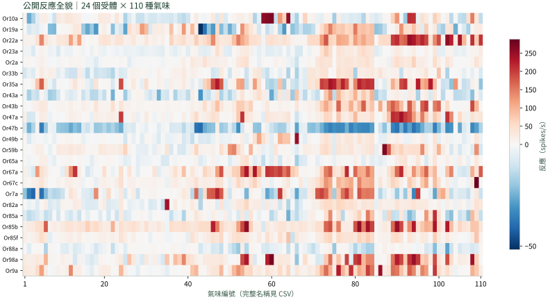
點圖放大 ↗ 整理後的全部 2,640 組 Hallem 受體–氣味反應。欄位依氣味 ID 排序，CSV 提供化學名稱；紅、藍表示正向及負向記錄反應。這些是公開電生理測量，並非團隊新做的實驗。 公開資料來源: (Hallem & Carlson, 2006 ) . 以不同留出方式檢驗泛化
已建立五種固定切分。主要整合模型比較集中於隨機配對、未見化學群集與未見受體；建立切分不代表每個模型都完成該項測試。
切分 回答的問題
Random-pair 在已知受體及氣味集合內，預測留出的配對。 Odorant-cold 預測訓練時未見的氣味。 Chemical-cluster-cold 預測未見的化學相似氣味群集。 Receptor-cold 預測訓練時完全未見的受體。 Receptor-cluster-cold 預測未見的序列相近受體群。
DoOR 用於資料一致性比對
DoOR（Database of Odorant Responses，整合果蠅氣味反應資料的資料庫） 比對包含 107 種共同氣味、2,568 組配對；sequence＋ESM（蛋白語言模型；此處將胺基酸序列轉為數值特徵） (Lin et al., 2023 ) 模型的每受體 Spearman（排序相關係數，範圍 −1 至 +1；比較排序是否一致，不是百分比準確率） 中位數為 0.938。DoOR 包含 Hallem 測量，模型訓練也用了重疊的 Hallem 配對，因此這是有共同來源的資料一致性檢查，不能視為獨立外部驗證或 93.8% 準確率。(Münch & Galizia, 2016 )
把氣味反應資料轉為受體設計候選 對選定的霉味相關氣味組合，哪些受體與序列改變值得測試？
證據｜觀察到什麼 加入受體序列特徵，改善了未見受體的反應預測。公開資料中的 Or22a（本研究設計組合中的黑腹果蠅 Drosophila melanogaster 氣味受體名稱） (Hallem & Carlson, 2006 ) 與 Or35a，對目標組與對照組呈現值得進一步探索的反應差異。
學習｜結果代表什麼 序列提供有用資訊，但額外加入結構特徵，尚未證明能穩健提升預測。
改變｜下一輪做什麼 先以預測口袋（受體內可容納配體的局部凹穴） 提出突變假說，再檢驗 docking（分子對接：搜尋分子在受體中的位置與朝向，並計算分數） (Trott & Olson, 2010 ) 分數與接觸解釋是否可靠。 展開設計 → 建構 → 測試 → 學習 → 再設計
Test｜測試與結果 在訓練時未見的受體上，只有配體（能與受體結合的分子，此處指受測氣味分子） 特徵的 R²（決定係數；1 為完全吻合，0 與平均值基準相當，負值表示比此基準差） 為 0.1125，加入序列後為 0.2325，全部特徵為 0.2356；最後這段增益的不確定度區間包含零。首輪 docking（分子對接：搜尋分子在受體中的位置與朝向，並計算分數） (Trott & Olson, 2010 ) 中，F34Y（第 34 位：苯丙胺酸 F → 酪胺酸 Y） 與 E196Q（第 196 位：麩胺酸 E → 麩醯胺酸 Q） 呈現小幅相對偏好變化。
Learn｜學習 預測模型可協助安排候選優先順序，但小幅 docking 分數差不能證明專一性改善。R² 描述預測擬合程度，不是正確率百分比。
Redesign｜再設計 下一輪從候選排名，轉向檢查突變位置是否接觸氣味分子，以及排名是否能承受 docking 設定的改變。
公開實驗數據
挑選第一輪受體 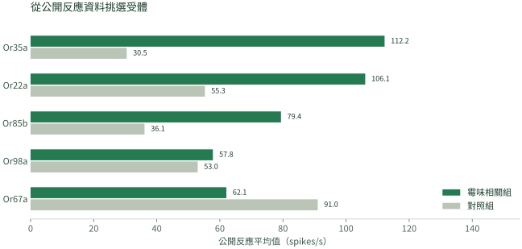
點圖放大 ↗ 五個受體篩選組的公開反應平均值，比較選定的霉味相關氣味與對照。Or35a（本研究設計組合中的黑腹果蠅 Drosophila melanogaster 氣味受體名稱） 、Or22a 在此組合中呈現較大的正向差異。數據來自文獻，並非團隊新做的功能實驗；組合偏好不代表霉菌專一性。 公開資料來源: (Hallem & Carlson, 2006 ) . 本研究計算結果
預測比較 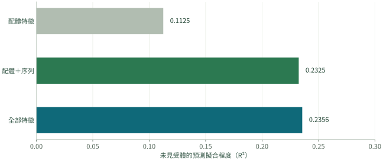
點圖放大 ↗ 未見受體的反應預測：序列資訊提高 R²（決定係數；1 為完全吻合，0 與平均值基準相當，負值表示比此基準差） ；全部特徵相對於配體（能與受體結合的分子，此處指受測氣味分子） ＋序列僅增加 0.0031（配對 95% 區間 −0.0316 至 0.0344）。數值來自 2,640 組受體–氣味配對的一致折外預測，並非生物介入實驗結果。 公開資料來源: (Hallem & Carlson, 2006 ) . 下載圖表數據（CSV） ↓
完整研究證據
完整模型比較
控制條件一致的特徵消融
六種特徵組合使用相同的 histogram gradient boosting（以分箱特徵建立決策樹，逐步修正誤差的集成預測模型） 設定、反應配對與固定切分。L 為配體（能與受體結合的分子，此處指受測氣味分子） 描述；S 為序列描述與 ESM2（蛋白語言模型；此處將胺基酸序列轉為數值特徵） (Lin et al., 2023 ) ；P 為口袋（受體內可容納配體的局部凹穴） 特徵；D 為 Vina（AutoDock Vina 對接分數；在此模型中越低越有利，並非實測反應大小） (Trott & Olson, 2010 ; Eberhardt et al., 2021 ) 與接觸摘要；M 為多姿態特徵。特徵清單排除 PubChem（公開化學資料庫；本研究用來核對氣味分子的化學結構） (Kim et al., 2025 ) 編號、反應衍生標籤及切分欄位；缺失 docking（分子對接：搜尋分子在受體中的位置與朝向，並計算分數） 描述依既有流程補零。
兩種評估中，序列資訊提供最清楚的增益。對未見受體，完整模型相對 LS 僅增加 ΔR²（兩個比較模型之間的 R² 差值） ＝0.0031，受體分組 bootstrap（對資料或群組重抽樣，以評估統計不確定度） 95% 區間為 −0.0316 至 0.0344。這尚未建立結構特徵的額外增益，也不代表所有結構方法都無效。
特徵 Chemical-cluster-cold R²（決定係數；1 為完全吻合，0 與平均值基準相當，負值表示比此基準差） Receptor-cold R²
L 0.1307 0.1125 LS 0.3855 0.2325 LSP 0.3840 0.2221 LSD 0.3781 0.2131 LSPD 0.3837 0.2154 LSPDM 0.3779 0.2356
本研究計算結果
哪些資訊改善了泛化？ 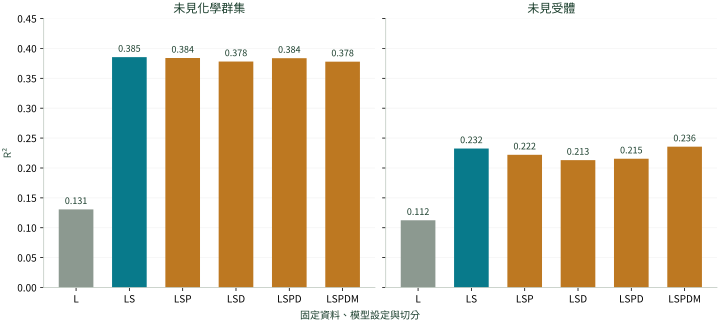
點圖放大 ↗ 未見化學群集與未見受體的控制特徵消融。L：配體（能與受體結合的分子，此處指受測氣味分子） ；S：序列／ESM2（蛋白語言模型；此處將胺基酸序列轉為數值特徵） (Lin et al., 2023 ) ；P：口袋（受體內可容納配體的局部凹穴） ；D：docking（分子對接：搜尋分子在受體中的位置與朝向，並計算分數） (Trott & Olson, 2010 ) ／接觸；M：多姿態。各組使用相同資料、模型設定與切分。完整模型對未見受體相較 LS 的小幅增益區間包含零，不能單憑柱高判定顯著性。 公開資料來源: (Hallem & Carlson, 2006 ) . 早期模型如何促成方法修正
下列歷史結果使用不同代表模型與特徵版本，保留作為方法演進證據，不能合併成同一模型的成績。歷史同一 HGB 比較的 ΔR² 約 0.0175，區間為 −0.0015 至 0.0419。Bootstrap 使用固定折外預測，未包含重新訓練與模型選擇的不確定度。
評估／模型 R² Spearman ρ（排序相關係數，範圍 −1 至 +1；比較排序是否一致，不是百分比準確率）
Random-pair / stacked tree 0.569 0.739 Chemical-cluster-cold / global blend 0.420 0.659 Receptor-cold／原始 HGB 0.229 0.463 Receptor-cold／加入多姿態 HGB 0.246 0.472
Docking 特徵並未一致改善泛化
早期 2,616 組 ExtraTrees（以隨機切分規則建立多棵決策樹的集成模型） 分析中，加入 Vina／接觸特徵使 chemical-cluster-cold R² 從 0.066 升至 0.220，但 receptor-cold 從 0.117 降至 0.006。八受體口袋重對接及小型受限制隱式溶劑 OpenMM（逐步計算原子運動方程式的模擬引擎） (Eastman et al., 2024 ) 研究，也未建立穩定的未見受體增益。因此後續工作轉向改善口袋定位、姿態核對與膜環境構型取樣。
完整研究證據
更完整的氣味特徵，能否改善序列反應預測？
方法｜每項實驗都比較同一批可用配對
HGB（以分箱特徵建立決策樹，逐步修正誤差的集成預測模型） （梯度提升樹）與 ExtraTrees（以隨機切分規則建立多棵決策樹的集成模型） （極端隨機樹）是兩種樹狀回歸方法。本輪固定模型設定，沿用五折化學類群留出與受體留出。前者測試未見化學類群的反應，後者測試未見受體對已知氣味的反應；尚未同時留出新受體與新氣味。另加入相同維度的隨機特徵作對照。
每個可用子集都重新訓練自己的基準；82、85、67、109 種氣味的絕對分數不能直接比較增減。R²（決定係數；1 為完全吻合，0 與平均值基準相當，負值表示比此基準差） 衡量相對常數平均值基準的預測誤差，不是相關係數或百分比準確率。Spearman ρ（排序相關係數，範圍 −1 至 +1；比較排序是否一致，不是百分比準確率） 衡量排序，MAE 則是以 spikes/s（每秒記錄到的神經動作電位次數） 表示的平均絕對反應誤差。
解讀｜以分組不確定區間評估探索性結果
配對 95% 區間以固定折外預測，依化學類群或受體重抽樣，考慮同組觀測的關聯；未涵蓋重新訓練、選模與實驗量測的不確定度。區間跨零代表尚未建立可靠增益。這些資料與切分已用於先前研究，因此屬探索性評估；次要比較未做多重比較校正。
完整研究證據
實驗 A｜分子量與實測 IR
方法｜82 種身分相符的氣相頻譜
110 種氣味中，82 種通過 NIST Chemistry WebBook（美國國家標準暨技術研究院；Chemistry WebBook 提供分子頻譜資料） 的完整化學識別碼、氣相來源與波數範圍核對。缺譜氣味從所有比較版本排除，沒有補零。以第一百分位扣除背景、裁切負吸光度，再對 650–3,800 cm⁻¹ 總面積標準化，積分成 63 個各 50 cm⁻¹ 的頻段。來源的 4 cm⁻¹ 取樣間隔不等於儀器解析度。(NIST, n.d. )
六個版本保留相同的受體序列特徵。「僅序列＋IR（紅外線吸收：分子對不同振動頻率光線的吸收） 」以 IR 取代全部化學特徵。尺寸特徵組包含分子量、重原子數及摩爾折射率（與極化性及尺寸相關的性質）。移除特徵是在測試對目前模型的額外預測價值，不能解讀成生物因果作用。
公開實驗數據
氣味分子的實測頻譜 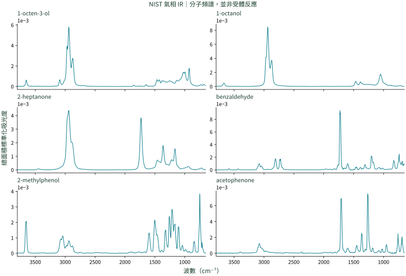
點圖放大 ↗ 六種通過核對的 NIST（美國國家標準暨技術研究院；Chemistry WebBook 提供分子頻譜資料） 氣相頻譜，已扣除背景並做總面積標準化。峰形描述相對分子吸收，並非受體活性或絕對吸收強度。(NIST, n.d. ) 結果｜實測 IR 未改善新化學類群預測
未見化學類群中，加入 IR 後 HGB（以分箱特徵建立決策樹，逐步修正誤差的集成預測模型） R²（決定係數；1 為完全吻合，0 與平均值基準相當，負值表示比此基準差） 從 0.3930 降至 0.3278（Δ −0.0653；95% 區間 −0.1127 至 −0.0078），ExtraTrees（以隨機切分規則建立多棵決策樹的集成模型） 從 0.3746 降至 0.3458（Δ −0.0288；−0.0564 至 −0.0003）。受體留出的點估計增益僅 +0.0028 與 +0.0102，兩個區間均跨零。
分子量單獨的效果依模型而變：保留它使化學類群留出的 HGB R² 改變 −0.0121、ExtraTrees 改變 +0.0188。保留整組尺寸特徵則讓兩模型的點估計上升（+0.0292／+0.0751），但 HGB 區間跨零。分子量本來就能進入前段反應模型，並不是尚未放入的缺失資訊。
下表列出 R²。下一步以完整諧振模式擴展實測視窗外的資訊；IR 特徵未改善預測，不能據此否定振動感測機制。
輸入特徵 化學類群 · HGB 化學類群 · ExtraTrees 受體 · HGB 受體 · ExtraTrees
原模型 0.3930 0.3746 0.2080 0.1000 ＋IR 63 維 0.3278 0.3458 0.2108 0.1103 僅序列＋IR 0.2135 0.3209 0.1679 0.1103 移除分子量 0.4052 0.3557 0.1792 0.1096 移除尺寸特徵組 0.3638 0.2995 0.2053 0.0949 ＋隨機 63 維 0.3194 0.3241 0.2132 0.1078
本研究計算結果
實測 IR 與尺寸消融 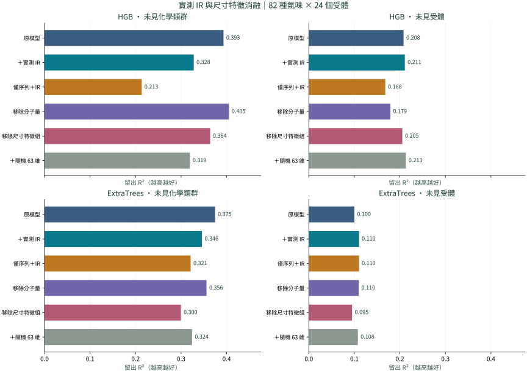
點圖放大 ↗ 所有版本使用同一批 82 種氣味與固定切分。移除分子量不同於移除全部三項尺寸相關描述。IR（紅外線吸收：分子對不同振動頻率光線的吸收） 未提升兩模型的化學類群留出 R²（決定係數；1 為完全吻合，0 與平均值基準相當，負值表示比此基準差） ；完整配對區間可下載。 完整研究證據
實驗 B｜完整諧振模式、EVA 與計算 IR
目的與取得｜補足 IR 視窗外的振動模式
本研究取得 Harada 等人的公開 Gaussian 量子化學輸出；來源為 2025 年預印本，不是本團隊重新完成的量子計算。來源使用氣相 B3LYP/6-31G(d)（密度泛函理論近似與基底組）。核對計算完成、模式數、化學連接及已指定的立體化學後，納入 85 種氣味、4,767 個諧振模式，其中 1,082 個低於 650 cm⁻¹。(Harada et al., 2025 )
每個分子提供一個來源構型的完整諧振正常模式：最佳化幾何附近的協同原子位移模式，以及頻率、IR（紅外線吸收：分子對不同振動頻率光線的吸收） 強度、約化質量與力常數。這不等於所有構型、非諧振運動、受體內振動或完整量子動力學。22 種氣味缺少完全相符的來源檔；2 種有虛頻；trans-caryophyllene 的立體化學仍需複核，均未納入。
方法｜將相同振動模式編成兩種特徵
EVA（將等權重正常振動頻率平滑後，形成固定長度的描述子） 讓各模式等權重，以 σ＝10 cm⁻¹ 的 Gaussian 平滑頻率，再於 1–3,996 cm⁻¹ 每 5 cm⁻¹ 取樣，得到 800 維特徵。計算 IR 使用相同模式與網格，但依計算出的 IR 強度加權；兩者皆未做面積標準化或頻率縮放。此經典 EVA 編碼不是 Gabler 等人所用 27 維 EVA 的重現。(Turner & Willett, 2000 ; Gabler et al., 2013 )
除完整 800 維外，也測試 PCA（主成分分析，依特徵變異方向壓縮維度） （主成分分析）降至 16 維及隨機 800／16 維對照。PCA 只在每折的不同訓練氣味上擬合；保留頻譜變異，不代表一定保留反應資訊。
本研究計算結果
等權 EVA 與強度加權 IR 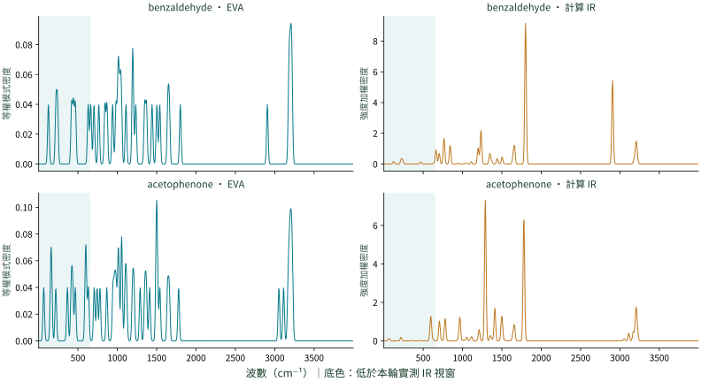
點圖放大 ↗ 由兩種公開諧振模式集合計算描述子，使用相同 Gaussian 寬度與網格。EVA（將等權重正常振動頻率平滑後，形成固定長度的描述子） 等權、計算 IR（紅外線吸收：分子對不同振動頻率光線的吸收） 依強度加權，因此縱軸尺度不同。底色表示低於實測 IR 視窗的頻段；這不是實測譜或受體內量子計算。(Turner & Willett, 2000 ; Harada et al., 2025 ) 結果｜85 種氣味的完整與降維特徵比較
事先指定的主要比較為 HGB（以分箱特徵建立決策樹，逐步修正誤差的集成預測模型） 加入 EVA 的化學類群留出：R²（決定係數；1 為完全吻合，0 與平均值基準相當，負值表示比此基準差） 0.3810 → 0.3421，Δ −0.0389（95% 區間 −0.0800 至 +0.0022）。點估計下降，但區間跨零，既不能聲稱可靠增益，也不能確認下降。ExtraTrees（以隨機切分規則建立多棵決策樹的集成模型） 亦由 0.4225 降至 0.3772。降維版本較接近基準，仍未超過其化學類群留出點估計。
未見受體中，HGB 加完整 EVA 或計算 IR 有小幅上升，但區間均跨零，隨機特徵也呈現類似點估計增益。因此尚未建立跨模型、跨留出方式的穩定改善；下表均為 R²。
輸入特徵 化學類群 · HGB 化學類群 · ExtraTrees 受體 · HGB 受體 · ExtraTrees
原模型 0.3810 0.4225 0.2217 0.1435 ＋EVA 800 0.3421 0.3772 0.2315 0.1175 ＋計算 IR 800 0.3177 0.3755 0.2372 0.1014 ＋EVA PCA 16 0.3683 0.4186 0.2186 0.1320 ＋計算 IR PCA 16 0.3635 0.4164 0.2298 0.1272 ＋隨機 800 0.2265 0.2812 0.2338 0.1037 ＋隨機 16 0.3241 0.3987 0.2323 0.1287
本研究計算結果
量子振動特徵比較 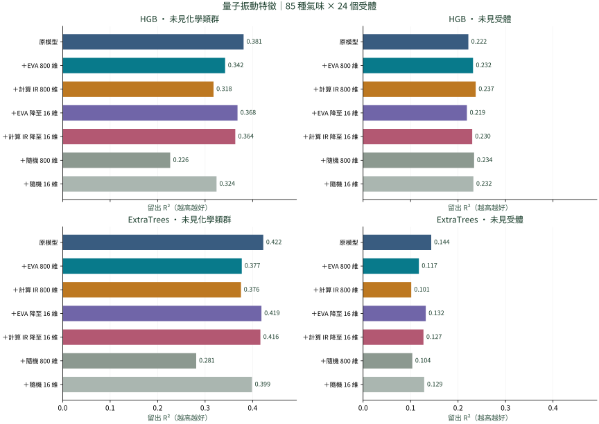
點圖放大 ↗ 85 種氣味比較涵蓋完整 EVA（將等權重正常振動頻率平滑後，形成固定長度的描述子） (Turner & Willett, 2000 ) 、計算 IR（紅外線吸收：分子對不同振動頻率光線的吸收） 、僅在訓練折擬合的 PCA（主成分分析，依特徵變異方向壓縮維度） ，以及隨機特徵對照。PCA 使化學類群留出分數較接近基準，但未超過。預測目標為文獻的功能反應。(Hallem & Carlson, 2006 ) 共同子集｜67 種同時有兩類來源的氣味
實測 IR 與量子資料共有 67 種氣味；全部基準在同一批 1,608 組配對重新訓練。兩模型的化學類群留出中，各種頻譜均未超過基準。實測 IR 的範圍、維度及標準化方式不同，不能將差異單獨歸因於實測或量子計算的頻譜準確度。
輸入特徵 化學類群 · HGB 化學類群 · ExtraTrees 受體 · HGB 受體 · ExtraTrees
原模型 0.3744 0.4003 0.2075 0.1094 ＋EVA 800 0.2847 0.3488 0.2076 0.0910 ＋計算 IR 800 0.2391 0.3643 0.2047 0.0968 ＋實測 IR 63 0.3360 0.3809 0.2127 0.1121
本研究計算結果
在相同氣味上比較實測與計算頻譜 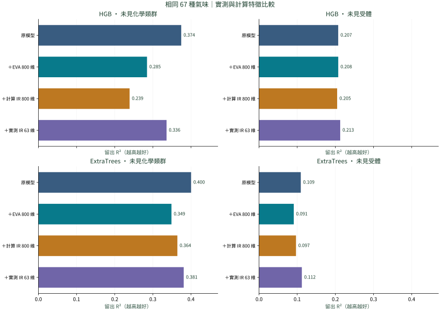
點圖放大 ↗ 所有模型均在同一批 67 種共同氣味上重新訓練。頻譜範圍、維度及標準化仍有差異，不能單獨比較來源準確度；分數不可與較大子集直接比較增減。 完整研究證據
實驗 C｜轉用固定 OpenPOM 分子特徵
目的｜從人類嗅覺表示，轉用到昆蟲受體反應
Principal Odor Map 從人類氣味描述學習分子表示；OpenPOM（Principal Odor Map；OpenPOM 為其開源重現版，用來學習分子氣味特徵） 是開源重現版，並非原始 POM 模型權重。我們測試其化學表示能否幫助「序列＋氣味」反應模型；AI 的「花香」或「蘑菇味」標籤，不能取代昆蟲受體的實測反應。(Lee et al., 2023 ; Barsainyan et al., 2023 )
方法｜固定 256 維表示，持續保留分子量
以預先指定的公開權重，在推論模式擷取官方 256 維倒數第二層線性表示，未以反應標籤微調。另一組固定權重分開作敏感度比較。兩種做法為在原模型額外加入 POM（共 3,176 維），或只替換 Morgan 指紋（共 1,128 維）；皆保留分子量等理化描述及兩組序列特徵。
所有版本使用 109 種氣味 × 24 個受體。氫氧化銨因為是兩個沒有共價鍵的獨立離子，不適用本輪圖模型流程而排除，沒有改成氨。上游模型不編碼立體化學：109 種氣味對應 106 個不同分子圖，其中三組異構物無法區分；相同圖使用相同特徵。
來源查核發現，109 種非立體化學結構中，有 108 種出現在公開的 4,983 分子候選預訓練集合；精確權重的訓練／測試歸屬未提供。因此化學類群留出代表下游未見該組 Hallem 反應，不能保證整個 AI 系統從未看過相關結構或人類氣味標籤。
結果｜改善方向取決於下游反應模型
事先指定的主要比較是 HGB（以分箱特徵建立決策樹，逐步修正誤差的集成預測模型） 加入 POM、預測未見反應資料的化學類群：R²（決定係數；1 為完全吻合，0 與平均值基準相當，負值表示比此基準差） 從 0.3892 降至 0.3232，Δ −0.0661（95% 區間 −0.1327 至 +0.0189）。ExtraTrees（以隨機切分規則建立多棵決策樹的集成模型） 則從 0.3572 升至 0.3967，Δ +0.0395（−0.0490 至 +0.1334）。替換指紋及使用另一組權重，也呈現相同的模型間方向差異；所有 POM 的 R² 差值區間均跨零。
ExtraTrees 的化學類群留出 R² 上升，並未同時改善排序或絕對誤差：Spearman ρ（排序相關係數，範圍 −1 至 +1；比較排序是否一致，不是百分比準確率） 為 0.6465 → 0.6459，MAE 為 25.2021 → 25.6071 spikes/s（每秒記錄到的神經動作電位次數） 。未見受體中，加入 POM 的 R² 小幅增加（HGB 0.2108 → 0.2332；ExtraTrees 0.1210 → 0.1321），但隨機特徵也達 0.2312／0.1323。尚不能建立 POM 特有且穩定的增益；下表列出 R²。
輸入特徵 化學類群 · HGB 化學類群 · ExtraTrees 受體 · HGB 受體 · ExtraTrees
原模型 0.3892 0.3572 0.2108 0.1210 POM 替換指紋 0.3251 0.4004 0.2267 0.1320 ＋POM 0.3232 0.3967 0.2332 0.1321 ＋隨機 256 0.2821 0.2727 0.2312 0.1323 替換：另一組權重 0.3515 0.4075 0.2057 0.1256 加入：另一組權重 0.3565 0.4103 0.2185 0.1351
本研究計算結果
嗅覺 AI 能否改善受體反應預測？ 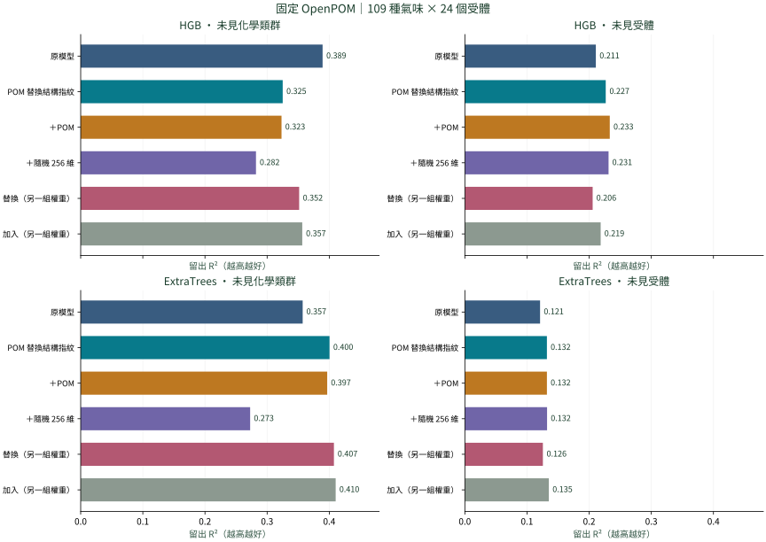
點圖放大 ↗ 同一批 109 種氣味的比較。全部版本保留分子量及序列特徵；另一組固定權重用於敏感度分析，並非挑選最高分模型。化學類群留出針對下游反應標籤，上游可能已看過分子資訊。(Lee et al., 2023 ; Barsainyan et al., 2023 ) 本研究計算結果
預測反應與實測反應對照 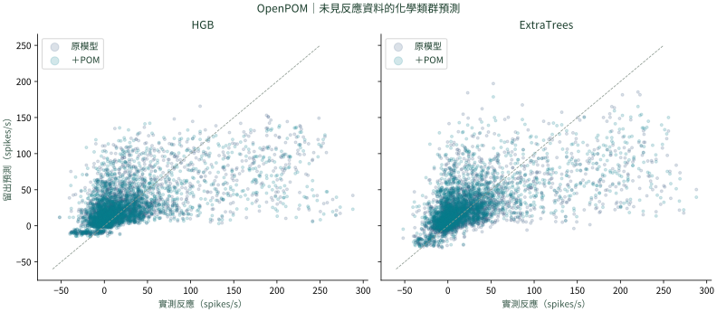
點圖放大 ↗ 化學類群留出的折外預測，比較原模型與加入 POM（Principal Odor Map；OpenPOM 為其開源重現版，用來學習分子氣味特徵） (Lee et al., 2023 ; Barsainyan et al., 2023 ) 。每點為一組受體–氣味配對；共用受體與化合物，並非彼此獨立的實驗重複。虛線表示預測與實測完全一致。(Hallem & Carlson, 2006 ) 學習與再設計｜保留基準，再檢驗任務微調
目前已建立可核對的實測頻譜、諧振模式描述與可重現的固定 AI 特徵，但尚未有一項建立相對基準的穩定全面改善。POM＋ExtraTrees 保留為獨立驗證候選，尚未成為已驗證的替代方案；本輪也沒有驗證突變效果、跨物種轉移、親和力、EC50（在指定功能測試中，產生一半最大反應所需的濃度） 或偵測極限。
LORAX 研究化學基礎模型的低秩任務微調，提供下一輪比較的依據，但本專案尚未執行。其文獻也使用 Hallem 資料，因此後續微調與選模須限於我們的訓練折內，再做獨立驗證；看過測試反應的權重不能提供無洩漏的測試。新增三維尺寸描述，以及未通過核對的量子構型，也仍屬後續工作。(McConachie et al., 2026 )
本研究計算結果
考慮不確定度後，是否仍有增益？ 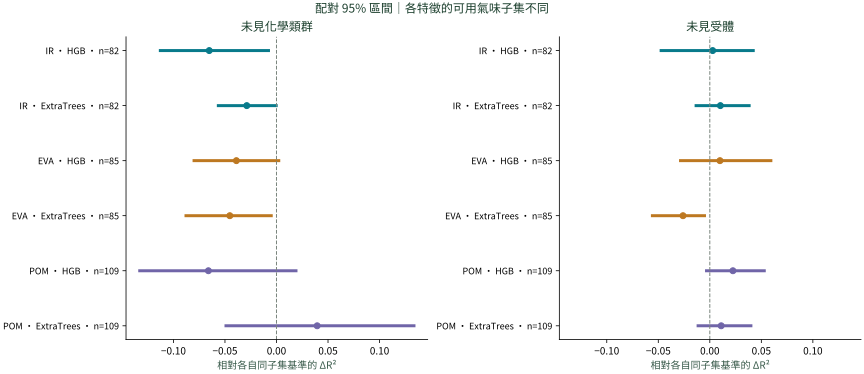
點圖放大 ↗ 點為加入特徵的 ΔR²（兩個比較模型之間的 R² 差值） ，線為條件於固定預測的配對分組 bootstrap（對資料或群組重抽樣，以評估統計不確定度） 95% 區間。各列使用自己的可用子集與相配基準，並非同一資料上的特徵排行榜。區間跨零不能建立可靠增益；次要區間未校正多重比較。 較好的 docking 分數，能否支持專一性？ 排名較前的突變，是否具有穩定的分數優勢與合理的結構解釋？
證據｜觀察到什麼 在檢查的姿態中，F34Y（第 34 位：苯丙胺酸 F → 酪胺酸 Y） 與 E196Q（第 196 位：麩胺酸 E → 麩醯胺酸 Q） 的突變側鏈沒有直接接觸配體（能與受體結合的分子，此處指受測氣味分子） 。相對偏好隨 docking（分子對接：搜尋分子在受體中的位置與朝向，並計算分數） (Trott & Olson, 2010 ) 設定改變，未得到穩健的正向勝出者。
學習｜結果代表什麼 分數較佳可能來自姿態位置或搜尋設定，未必支持原先提出的突變機制。
改變｜下一輪做什麼 先改善口袋（受體內可容納配體的局部凹穴） 與構型評估，再擴大突變推論；並以已有實驗結構的參考複合體，研究分子進出的問題。
展開設計 → 建構 → 測試 → 學習 → 再設計
Design｜目的 要求候選同時具有可解釋的配體（能與受體結合的分子，此處指受測氣味分子） –殘基關係，以及在合理 docking（分子對接：搜尋分子在受體中的位置與朝向，並計算分數） (Trott & Olson, 2010 ) 設定下仍穩定的相對偏好。
Build｜建構 將突變與野生型結構對齊，比較共用搜尋範圍與模板引導的替代中心，並檢查側鏈接觸。相對偏好定義為對照組的 docking 變化，減去霉味相關組的變化。
Test｜測試與結果 以 4.5 Å（埃；1 Å＝0.1 奈米） 作為接觸判準，檢查的姿態未支持 F34Y（第 34 位：苯丙胺酸 F → 酪胺酸 Y） 或 E196Q（第 196 位：麩胺酸 E → 麩醯胺酸 Q） 的直接接觸解釋。候選偏好的方向對 docking 設定與氣味組合敏感；沒有突變在這些檢查下維持穩健的正向偏好。
Learn｜學習 首輪篩選產生的是假說，尚非功能已驗證的工程受體。沒有直接接觸不排除間接效應，但目前模型也沒有證明這些效應。
Redesign｜再設計 把功能反應預測與物理進出路徑分開檢驗，使用 OR10（埃及斑蚊 Aedes aegypti 的第 10 號氣味受體） (Zhao et al., 2024 ) ／Orco（氣味受體共同受體，與辨識氣味的 OR 一起組成離子通道） 複合體研究 docking 本身沒有回答的問題。
本研究計算結果
候選突變是否改善氣味組合偏好？ 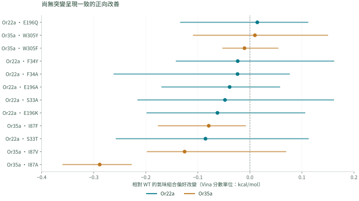
點圖放大 ↗ 在相同 docking（分子對接：搜尋分子在受體中的位置與朝向，並計算分數） 搜尋框下，比較突變與各自的野生型受體。點為平均改變，橫線為各次搜尋的最小至最大值，不是信賴區間。偏好改變定義為「對照組平均 ΔVina（突變體 docking 分數減去相應野生型分數） − 霉味相關組平均 ΔVina」，正值有利於選定的霉味相關組；尚無候選在各次搜尋皆維持正值。此分數診斷不能證明親和力或功能改變。 結構／方法參考: (Mirdita et al., 2022 ; Trott & Olson, 2010 ) . 本研究計算結果
檢查突變機制是否合理 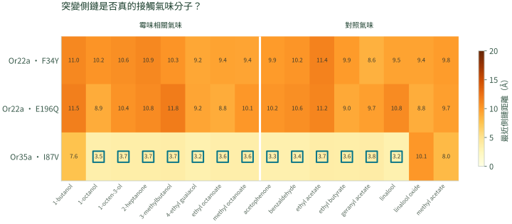
點圖放大 ↗ 歷史最佳 docking（分子對接：搜尋分子在受體中的位置與朝向，並計算分數） 姿態中，突變側鏈到各氣味分子的最近距離。藍框標出 ≤4.5 Å（埃；1 Å＝0.1 奈米） 的接觸。F34Y（第 34 位：苯丙胺酸 F → 酪胺酸 Y） 、E196Q（第 196 位：麩胺酸 E → 麩醯胺酸 Q） 在這些姿態中距配體（能與受體結合的分子，此處指受測氣味分子） 較遠；I87V（第 87 位：異白胺酸 I → 纈胺酸 V） 則說明有幾何接觸仍不代表專一性改善。數值是姿態幾何，不是結合能。 結構／方法參考: (Mirdita et al., 2022 ; Trott & Olson, 2010 ) . 完整研究證據
突變設計與氣味組合
優先受體與突變增益，是兩個不同的判斷
我們比較公開反應資料後發現，未加入設計突變的 Or22a（本研究設計組合中的黑腹果蠅 Drosophila melanogaster 氣味受體名稱） 、Or35a，對選定霉味相關組的平均反應高於對照組，因此列為優先功能實驗候選。選擇這兩個受體，不需要先假定某個突變有效；這項組合比較也尚未證明霉菌專一性或偵測極限。(Hallem & Carlson, 2006 )
突變篩選回答的是下一個問題：改變胺基酸後，是否比原有受體更偏好目標氣味？F34Y（第 34 位：苯丙胺酸 F → 酪胺酸 Y） 、E196Q（第 196 位：麩胺酸 E → 麩醯胺酸 Q） 初篩曾有小幅正向位移，但後續檢查發現，方向與排名依計算設定而變。因此，我們已有受體候選，而突變帶來的增益在計算階段仍有不確定性，並非僅缺 wet lab 驗證。
計算建構
對 Or35a、Or22a、Or85b、Or98a、Or67a 提出 35 個單點突變，並核對每個位置的原始胺基酸。首輪結構篩選包含 12 個突變與 Or22a／Or35a 野生型，共 14 個 ColabFold（結合 AlphaFold 與快速序列搜尋的蛋白結構預測流程） (Mirdita et al., 2022 ) 模型。這些是序列與結構設計，不代表已完成 cloning 或功能表達。
Or22a 平均 pLDDT（局部結構預測信心分數，範圍 0–100；越高表示模型越有信心） (Jumper et al., 2021 ) 約 91.6–92.2，Or35a 約 84.0–86.0；突變前後各五個殘基的局部 Cα（α 碳原子，用來描述蛋白質主鏈骨架） RMSD（均方根偏差：依指定方式對齊後，原子位置的整體差異） 約 0.06–0.25 Å（埃；1 Å＝0.1 奈米） 。預測骨架相近，不能證明蛋白穩定性或受體功能。
受體 首輪結構篩選突變
Or22a E196Q, E196A（第 196 位：麩胺酸 E → 丙胺酸 A） , E196K（第 196 位：麩胺酸 E → 離胺酸 K） , S33A（第 33 位：絲胺酸 S → 丙胺酸 A） , S33T（第 33 位：絲胺酸 S → 蘇胺酸 T） , F34A（第 34 位：苯丙胺酸 F → 丙胺酸 A） , F34Y Or35a I87A（第 87 位：異白胺酸 I → 丙胺酸 A） , I87V（第 87 位：異白胺酸 I → 纈胺酸 V） , I87F（第 87 位：異白胺酸 I → 苯丙胺酸 F） , W305F（第 305 位：色胺酸 W → 苯丙胺酸 F） , W305Y（第 305 位：色胺酸 W → 酪胺酸 Y）
此處的「霉味相關偏好」如何定義
14 個結構分別對接 16 種氣味。ΔVina（突變體 docking 分數減去相應野生型分數） ＝score(mutant)−score(WT（wild type，未加入設計突變的野生型序列） )；組合偏好位移＝mean(ΔVina_control)−mean(ΔVina_mold-related)。正值代表分數變化較偏向這個選定組合，不能換算成活化、EC50（在指定功能測試中，產生一半最大反應所需的濃度） 或偵測極限。
分組 氣味
霉味相關 1-octen-3-ol; 2-heptanone; 1-octanol; 1-butanol; 3-methylbutanol; 4-ethyl guaiacol; methyl octanoate; ethyl octanoate 對照 acetophenone; benzaldehyde; ethyl acetate; ethyl butyrate; geranyl acetate; linalool; linalool oxide; methyl acetate
為何修正首輪排名
首輪 F34Y、E196Q 位移分別為 +0.0581、+0.0543；後續共同搜尋框平均為 −0.0234、+0.0142，搜尋範圍皆跨零。檢查的原始與重算姿態中，兩者皆缺少直接側鏈接觸；以 1-octen-3-ol 為例，歷史最近側鏈距離約 10.6、10.4 Å。
驗證先對齊突變與 WT Cα、檢查全部保存的 docking（分子對接：搜尋分子在受體中的位置與朝向，並計算分數） (Trott & Olson, 2010 ) 姿態，再比較共用 26 Å 立方搜尋框與模板引導的替代中心。8V02（PDB 結構編號：實驗解析、已結合鄰甲酚的 OR10–Orco 複合體） (Zhao et al., 2024 ) footprint 以 US-align（比較並對齊分子三維結構的軟體） (Zhang et al., 2022 ) 轉移後僅作異源空間假說；部分原始姿態距該中心約 24 Å，這不是實驗確認的果蠅口袋（受體內可容納配體的局部凹穴） 。
逐一移除氣味及組內重抽樣後，F34Y／E196Q 的不確定範圍仍跨零。輸入準備保留芳香鍵辨識警告；歷史與修正版 docking 設定分開分析。F34Y 不再列為優先專一性候選；E196Q 保留作低信心比較；I87V 則是有接觸但相對偏好為負的比較案例。首輪尚無已驗證的正向勝出者。
完整研究證據
跨物種探索：功能資訊能否轉移？
目的｜區分反應預測與功能相似受體搜尋
我們測試果蠅資訊能否協助挑選蚊子受體。Carey 等人提供 50 個 Anopheles gambiae 受體 × 113 種氣味，共 5,650 組反應與 SEM（平均值標準誤，描述估計平均值的不確定度） ，其中 40 種氣味與果蠅組合重疊。此 Anopheles 跨物種研究與 Aedes OR10（埃及斑蚊 Aedes aegypti 的第 10 號氣味受體） (Zhao et al., 2024 ) 的 MD（分子動力學：依力場逐步計算原子如何運動） (Eastman et al., 2024 ) 參考系統是不同研究。(Carey et al., 2010 )
50 個歷史名稱皆找到候選序列：46 個 A 級、2 個 B 級、2 個 C 級。AgOr12（Anopheles gambiae 蚊子的氣味受體名稱；Ag 表示物種） (Carey et al., 2010 ) 、AgOr67 有命名或重複基因疑義，因此主要片段分析使用 A／B 級的 48 個受體，與 24 個果蠅受體比較，共 1,152 組受體–受體配對。最初直接轉移基準則使用全部 50 個蚊子受體。
測試一｜直接轉移果蠅反應模型
在與果蠅基準具有相同化學身分的 2,000 組蚊子受體–氣味配對上，ExtraTrees（以隨機切分規則建立多棵決策樹的集成模型） 轉移基準得到 R²（決定係數；1 為完全吻合，0 與平均值基準相當，負值表示比此基準差） ＝−0.288、Spearman ρ（排序相關係數，範圍 −1 至 +1；比較排序是否一致，不是百分比準確率） ＝−0.060。負 R² 表示此評估集合的平方預測誤差大於固定平均值基準，尚不支持可靠的物種轉移。
本研究計算結果
果蠅模型預測與蚊子實測反應 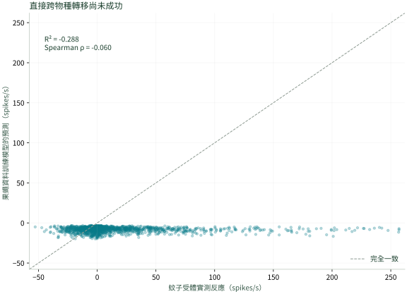
點圖放大 ↗ 每點為一組蚊子受體–氣味配對，涵蓋 50 個 Anopheles 受體與 40 種共同氣味，共 2,000 點。果蠅資料訓練的 ExtraTrees（以隨機切分規則建立多棵決策樹的集成模型） 基準為 R²（決定係數；1 為完全吻合，0 與平均值基準相當，負值表示比此基準差） ＝−0.288、Spearman ρ（排序相關係數，範圍 −1 至 +1；比較排序是否一致，不是百分比準確率） ＝−0.060。虛線是完全一致線，不是擬合趨勢。實測反應來自 Carey 等人，預測來自本專案；資料點共享受體及氣味，並非獨立生物重複。 公開資料來源: (Hallem & Carlson, 2006 ; Carey et al., 2010 ) . 測試二｜比對局部序列片段
另一問題是：兩個受體在共同 40 種氣味上的反應輪廓是否相似？我們比較全長 identity（對齊後胺基酸位置相同的比例） 、ESM（蛋白語言模型；此處將胺基酸序列轉為數值特徵） (Lin et al., 2023 ) embedding（代表序列或分子資訊的數值向量） 與 21、31、41 個胺基酸的局部片段。不同版本降低共同序列骨架與物種 signature 的權重、扣除物種內 embedding 背景，或要求相對位置及疏水性相容。這些是序列層級的拓撲代理，並非三維口袋（受體內可容納配體的局部凹穴） 對應。
雙向配對檢查兩個片段是否互相選對方為最佳對象。反應標籤未參與片段權重學習；但方法是在同一反應矩陣上比較與選出，因此最佳結果仍需以受體留出方式確認。
全長 identity 的 ρ＝0.017；31-aa（胺基酸殘基數） 雙向最佳配對比例達 ρ＝0.141，受體 bootstrap（對資料或群組重抽樣，以評估統計不確定度） 區間為 0.035–0.250。未校正的區塊置換 p＝0.033，但對測試方法做 BH（Benjamini–Hochberg 多重檢定校正；此處 q 為校正後的 p 值） (Benjamini & Hochberg, 1995 ) 校正後 q＝0.259，未通過校正後 0.05 門檻。這是反應輪廓相似性的弱探索訊號，不是個別配體（能與受體結合的分子，此處指受測氣味分子） 活化預測。
本研究計算結果
以序列方法尋找功能相似受體 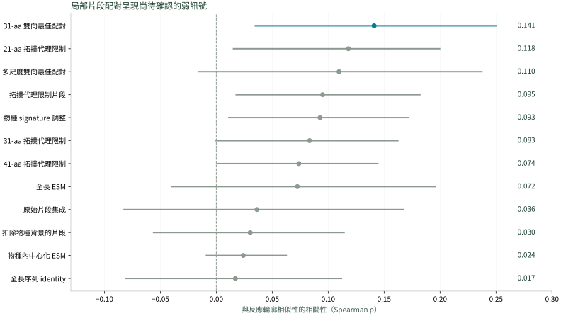
點圖放大 ↗ 主要 48 × 24 受體配對集合上的全部十二種序列方法。點表示序列分數與 40 種氣味反應輪廓 Pearson（衡量數值輪廓線性相似程度的相關係數） 相似性的排序相關性，橫線是受體 bootstrap（對資料或群組重抽樣，以評估統計不確定度） 區間。最佳 31-aa（胺基酸殘基數） 雙向配對法 Spearman ρ（排序相關係數，範圍 −1 至 +1；比較排序是否一致，不是百分比準確率） ＝0.141，但 BH（Benjamini–Hochberg 多重檢定校正；此處 q 為校正後的 p 值） (Benjamini & Hochberg, 1995 ) 校正 q＝0.259 未達 0.05；方法也在同一矩陣上選出。這是探索性的輪廓比對，尚非已驗證的氣味反應預測。 公開資料來源: (Hallem & Carlson, 2006 ; Carey et al., 2010 ) . 學習與再設計｜確認局部配對何時有用
效果依受體而異：較廣的敏感度分析中，AgOr4／AgOr56 是改善例，AgOr63／AgOr41 則退步。單純扣除物種平均並未解決轉移問題。下一步需要真正的三維口袋鄰域、受體留出的巢狀方法選擇，以及條件可比的外部 assay（依特定條件進行的生物活性測試） 。第三物種 Spodoptera littoralis 已整理序列與文獻，但仍缺可用的數值反應矩陣及進一步序列核對，尚未完成第三物種驗證。
第三物種盤點的功能文獻為 de Fouchier 等人的蛾類受體研究；候選胺基酸序列則由 Jacquin-Joly 等人的補充資料整理而來。這些文獻支持資料盤點，不代表已完成跨物種預測驗證。(de Fouchier et al., 2017 ; Jacquin-Joly et al., 2012 )
受體動態能否改善氣味反應排序？ 一組動態受體構型，是否比單一靜態口袋（受體內可容納配體的局部凹穴） 更能解釋氣味反應？
證據｜觀察到什麼 MD（分子動力學：依力場逐步計算原子如何運動） (Eastman et al., 2024 ) 提供了不同口袋構型，但在擴充氣味組合中，對接與反應的相關性沒有優於靜態 apo（未結合氣味分子的狀態） 參考。 學習｜結果代表什麼 更多構型不一定產生更好的功能預測。Docking（分子對接：搜尋分子在受體中的位置與朝向，並計算分數） (Trott & Olson, 2010 ) 同時預設了分子已經能到達口袋。
改變｜下一輪做什麼 除了分子放入口袋後是否適合，也要研究它如何進入口袋與離開。
展開設計 → 建構 → 測試 → 學習 → 再設計
Design｜目的 以實驗解析的未結合態 8V00（PDB 結構編號：實驗解析、未結合氣味分子的 OR10–Orco 複合體） 與 o-cresol（鄰甲酚，又稱 2-methylphenol；8V02 中觀察到的氣味分子） 結合態 8V02（PDB 結構編號：實驗解析、已結合鄰甲酚的 OR10–Orco 複合體） 作為 OR10（埃及斑蚊 Aedes aegypti 的第 10 號氣味受體） ／Orco（氣味受體共同受體，與辨識氣味的 OR 一起組成離子通道） 參考。未解析迴圈的補建屬於模型假設，並非實驗觀察座標。(Zhao et al., 2024 )
Build｜建構 將受體複合體置於含水、離子的 POPC（一種磷脂醯膽鹼脂質，此處用來建立模擬脂膜） 脂膜。修正幾何與週期邊界問題後，將結合態診斷延伸至 20 ns（奈秒，10⁻⁹ 秒） ，並以 5 ns 的 apo（未結合氣味分子的狀態） MD（分子動力學：依力場逐步計算原子如何運動） (Eastman et al., 2024 ) 取樣未結合口袋（受體內可容納配體的局部凹穴） ；再分群選出代表構型進行 docking（分子對接：搜尋分子在受體中的位置與朝向，並計算分數） (Trott & Olson, 2010 ) 。
Test｜測試與結果 在擴充的 29 種可對接氣味中，兩個 MD 模型集合的 Spearman（排序相關係數，範圍 −1 至 +1；比較排序是否一致，不是百分比準確率） 相關係數分別為 0.407、0.338；靜態 8V00 為 0.450，靜態 8V02 為 0.504。反應值取自公開鈣訊號圖表的數位化。探索性的芳香環數量基準達 0.790，提醒我們注意氣味組合的化學分布影響。(Bohbot et al., 2011 )
Learn｜學習 這些回溯性相關性不能直接推得敏感度、EC50（在指定功能測試中，產生一半最大反應所需的濃度） 或親和力。不同功能 assay（依特定條件進行的生物活性測試） 分開分析，短時間 MD 也不代表已達平衡或補建區域必然正確。
Redesign｜再設計 明確測試分子能否到達口袋，先將 o-cresol 放在 apo 受體外部，觀察無偏壓軌跡。
完整研究證據
膜模型如何建立與檢查
實驗座標、AlphaFold 與缺失區域
8V02（PDB 結構編號：實驗解析、已結合鄰甲酚的 OR10–Orco 複合體） 是結合 o-cresol（鄰甲酚，又稱 2-methylphenol；8V02 中觀察到的氣味分子） 的 Aedes aegypti OR10（埃及斑蚊 Aedes aegypti 的第 10 號氣味受體） 加三個 Apocrypta bakeri Orco（氣味受體共同受體，與辨識氣味的 OR 一起組成離子通道） 次單元；8V00（PDB 結構編號：實驗解析、未結合氣味分子的 OR10–Orco 複合體） 提供未結合態參考。AlphaFold（從蛋白序列預測三維結構的 AI 系統） 支持缺失區域假說與果蠅受體特徵，ColabFold（結合 AlphaFold 與快速序列搜尋的蛋白結構預測流程） 用於突變模型；MD（分子動力學：依力場逐步計算原子如何運動） (Eastman et al., 2024 ) 採用的已解析 OR10／Orco 座標來自冷凍電顯，並非從零預測的 AlphaFold 複合體。(Zhao et al., 2024 ; Jumper et al., 2021 ; Mirdita et al., 2022 )
參考 每個 Orco 次單元未解析區段 複合體補建殘基總數
8V02 1–6, 160–167, 244–312 249 8V00 1–3, 160–167, 244–312 240
序列補齊不等於迴圈構型已驗證
完整複合體共有 1,797 個蛋白殘基。AlphaFold 參考中，Orco 244–312 長迴圈平均 pLDDT（局部結構預測信心分數，範圍 0–100；越高表示模型越有信心） (Jumper et al., 2021 ) 為 37.68，迴圈對核心平均 PAE（預測對齊誤差，估計殘基彼此相對位置的不確定度；越低越有信心） 為 28.88 Å（埃；1 Å＝0.1 奈米） 。核心對齊與局部補建產生可測假說，並非觀察到的迴圈位置。幾何不合格候選未納入 MD；合格 apo（未結合氣味分子的狀態） 假說仍有共同的建模來源。
本研究計算結果
補建 Orco 區域的不確定性 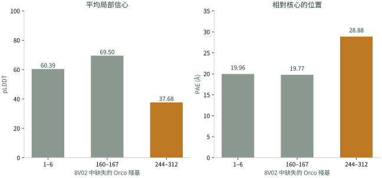
點圖放大 ↗ 8V02（PDB 結構編號：實驗解析、已結合鄰甲酚的 OR10–Orco 複合體） 三段缺失 Orco（氣味受體共同受體，與辨識氣味的 OR 一起組成離子通道） 區域的 AlphaFold（從蛋白序列預測三維結構的 AI 系統） 信心摘要。較高 pLDDT（局部結構預測信心分數，範圍 0–100；越高表示模型越有信心） 代表較高局部信心，較大迴圈對核心 PAE（預測對齊誤差，估計殘基彼此相對位置的不確定度；越低越有信心） 代表相對位置更不確定；244–312 長迴圈的定位尤其不確定。信心值來自模板預測，不能驗證後續補建與鬆弛座標。 結構／方法參考: (Zhao et al., 2024 ; Jumper et al., 2021 ) . 物理模型與工程修正
OpenMM（逐步計算原子運動方程式的模擬引擎） 以經典力場（用來近似原子間作用力的方程式與參數組） 積分原子運動；環境為 POPC（一種磷脂醯膽鹼脂質，此處用來建立模擬脂膜） 膜、TIP3P（以三個作用點描述水分子的模擬模型） (Jorgensen et al., 1983 ) 水與離子，使用 ff14SB（Amber 系列的蛋白質原子交互作用參數組） (Maier et al., 2015 ) ／Lipid17（Amber 系列的脂質原子交互作用參數組） (OpenMM contributors, n.d. ) ，配體（能與受體結合的分子，此處指受測氣味分子） 採 GAFF 2.2.20（General Amber Force Field；本研究以 2.2.20 版提供小分子力場參數） (Wang et al., 2004 ) 與 AM1-BCC（為配體原子估算部分電荷的方法） (Jakalian et al., 2002 ) 電荷。pH 7 用於起始加氫，並非 constant-pH 動力學。基線為 300 K、1 bar、PME（粒子網格 Ewald 法，用來計算週期模擬盒中的長程靜電作用） 與 1 nm（奈米；1 nm＝10⁻⁹ 公尺） 短程截斷；含氫鍵長受限，沒有氫質量重分配。牽引研究使用其設定中的 300 K NVT（固定粒子數、體積與溫度的模擬條件） 系統。(Eastman et al., 2024 )
帶位置限制的 200 ps（皮秒，10⁻¹² 秒） 試跑用於檢查系統準備。完整序列 5 ns（奈秒，10⁻⁹ 秒） 診斷發現蛋白最短週期影像距離為 0.877 nm，低於短程截斷。最小水層 padding 增至 2.5 nm 後，系統為 658,984 個原子、1,066 個 POPC 與 162,148 個水分子；修正後 5 ns 軌跡的受檢最短影像距離為 3.227–4.113 nm，解除了已觀察到的短程問題，但未排除長程有限尺寸效應。
前 1 ns 包含 20 ps 升溫與 980 ps 分階段解除限制，後 4 ns 無位置限制。升溫以 1 fs（飛秒，10⁻¹⁵ 秒） 、之後以 2 fs 積分，與保存影格間距不同。逐格檢查包含 1,944 個蛋白立體中心、重原子鍵長與週期影像。幾何通過是解讀的必要條件，不能當作已達平衡的證據。(Grossfield et al., 2018 )
完整研究證據
結合態 MD：從 5 ns 到 20 ns
哪些指標穩定，哪些仍在改變？
相配的結合態軌跡由 5 延伸至 20 ns（奈秒，10⁻⁹ 秒） ，延長階段沒有位置限制；預先指定的摘要窗口為 3–5 ns 與 15–20 ns。完成軌跡皆通過保存影格的幾何檢查，未見手性反轉；其中一條補建區域 RMSD（均方根偏差：依指定方式對齊後，原子位置的整體差異） 在 10–15 與 15–20 ns 窗口間改變 0.2591 nm（奈米；1 nm＝10⁻⁹ 公尺） ，高於暫定 0.1 nm 漂移門檻。
摘要先計算各軌跡內平均，再描述軌跡平均之間的變異；這是同一起始模型下的條件式取樣，相關影格不是獨立實驗。補建區域 RMSD 描述相對建模起點的鬆弛，不是相對已知原生迴圈的誤差。
指標 3–5 ns｜平均 ± SD（標準差，描述觀測值的分散程度） 15–20 ns｜平均 ± SD
溫度（K） 300.2847 ± 0.0416 300.2873 ± 0.0363 盒體積（nm³） 6464.2306 ± 0.5542 6463.5634 ± 0.5781 側向面積（nm²） 384.2783 ± 0.5193 378.9845 ± 1.8196 膜磷酸頭基厚度（nm） 3.8239 ± 0.0094 3.8575 ± 0.0128 已解析核心 Cα（α 碳原子，用來描述蛋白質主鏈骨架） RMSD（nm） 0.2189 ± 0.0051 0.2500 ± 0.0212 OR10（埃及斑蚊 Aedes aegypti 的第 10 號氣味受體） (Zhao et al., 2024 ) Cα RMSD（nm） 0.1269 ± 0.0149 0.1432 ± 0.0180 補建區域 Cα RMSD（nm） 1.0383 ± 0.0445 1.5917 ± 0.1706 OR10 對齊後配體（能與受體結合的分子，此處指受測氣味分子） RMSD（nm） 0.0758 ± 0.0039 0.1142 ± 0.0434 Ser133（第 133 位絲胺酸） 氫鍵幾何比例 0.9567 ± 0.0252 0.7613 ± 0.1792
本研究計算結果
原始結合態 MD 的診斷結果 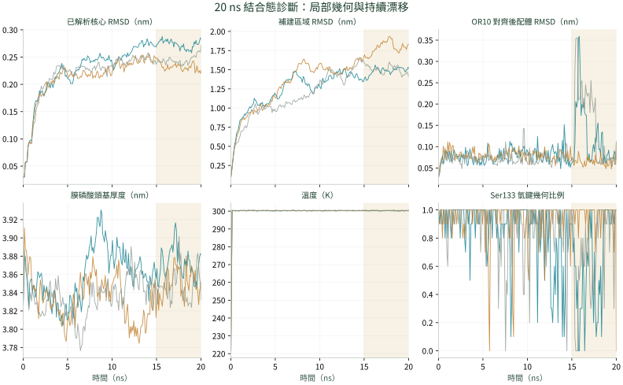
點圖放大 ↗ 已完成的 20 ns（奈秒，10⁻⁹ 秒） 結合態軌跡。曲線為 0.1 ns 區間中位數；氫鍵幾何則使用區間內符合條件的比例。底色標示預先指定的 15–20 ns 分析窗口。溫度與膜指標須連同仍持續的補建區域漂移判讀；幾何檢查通過，不能證明平衡、結合親和力或迴圈已經實驗驗證。 配體接觸是結構指標
Ser133 氫鍵幾何要求 O···O <0.35 nm 且供體–氫–受體角度 >135°，檢查兩個供受體方向；平均比例由早期比較窗口的 0.9567 變為後期的 0.7613。幾何比例不能量測親和力、停留時間或活化。配合仍存在的迴圈漂移，結果支持局部結構診斷，尚不足以宣稱平衡。
實驗結構
氣味分子位於複合體的哪裡？ 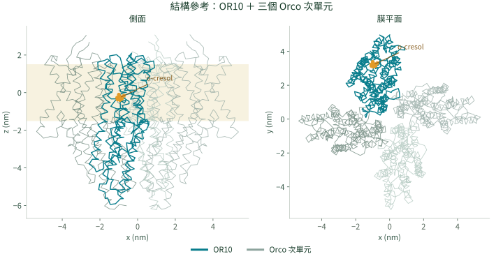
點圖放大 ↗ 實驗結構 PDB（Protein Data Bank，保存分子三維結構的資料庫） (Berman et al., 2000 ) 8V02（PDB 結構編號：實驗解析、已結合鄰甲酚的 OR10–Orco 複合體） 的 Cα（α 碳原子，用來描述蛋白質主鏈骨架） 骨架與 o-cresol（鄰甲酚，又稱 2-methylphenol；8V02 中觀察到的氣味分子） 重原子。藍綠為 OR10（埃及斑蚊 Aedes aegypti 的第 10 號氣味受體） ，灰綠為三個 Orco（氣味受體共同受體，與辨識氣味的 OR 一起組成離子通道） ，橘色為氣味分子。未解析區段保持斷開；米色區帶是同源轉移的膜方向參考，不是觀察到的脂質。此圖呈現結構起點，並非 MD（分子動力學：依力場逐步計算原子如何運動） (Eastman et al., 2024 ) 軌跡。 實驗結構來源: (Zhao et al., 2024 ) . 本研究計算結果
無氣味分子的 MD 中，哪些區域在移動？ 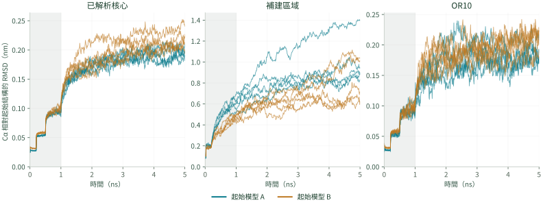
點圖放大 ↗ 兩個 apo（未結合氣味分子的狀態） 補建起始模型的 5 ns（奈秒，10⁻⁹ 秒） 實際軌跡。三項指標皆以已解析核心的 Cα（α 碳原子，用來描述蛋白質主鏈骨架） 對齊，量測相對各自起始結構的位移。補建區域包含複合體中原先缺失的建模部分，不限於 OR10（埃及斑蚊 Aedes aegypti 的第 10 號氣味受體） (Zhao et al., 2024 ) 。底色的前 1 ns 包含升溫與分階段解除限制，後 4 ns 無位置限制。補建區域較大的運動提醒我們檢查結構不確定性；短程軌跡不能證明已達平衡或補建構型正確。 本研究計算結果
氣味反應排序 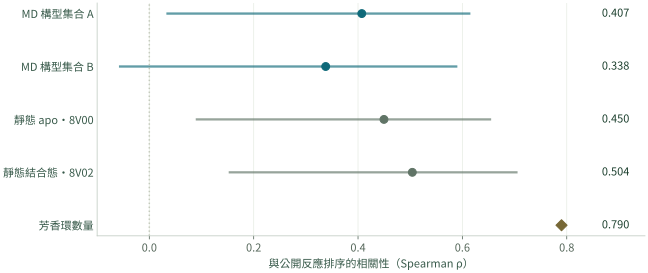
點圖放大 ↗ 同一公開鈣反應 assay（依特定條件進行的生物活性測試） 中 29 種氣味的回溯性排序。點為 Spearman ρ（排序相關係數，範圍 −1 至 +1；比較排序是否一致，不是百分比準確率） ，橫線為探索性的氣味重抽樣區間，未涵蓋實驗測量誤差。MD（分子動力學：依力場逐步計算原子如何運動） (Eastman et al., 2024 ) 構型集合未優於靜態 8V00（PDB 結構編號：實驗解析、未結合氣味分子的 OR10–Orco 複合體） (Zhao et al., 2024 ) ；芳香環數量（ρ＝0.790）是檢視氣味組合後追加的探索性化學基準。 公開資料來源: (Bohbot et al., 2011 ) . 本研究計算結果
從每個氣味分子看相關性 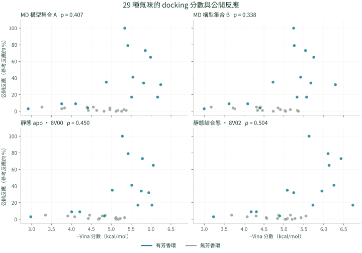
點圖放大 ↗ 每格呈現相同的 29 種氣味。將本研究 docking（分子對接：搜尋分子在受體中的位置與朝向，並計算分數） (Trott & Olson, 2010 ) 分數與 Bohbot 等人（2011）圖 2 讀取的 AaOR10（埃及斑蚊 Aedes aegypti 的第 10 號氣味受體） (Zhao et al., 2024 ) 鈣反應比較；反應值是文獻測量，並非本團隊濕實驗結果。橫軸將 Vina（AutoDock Vina 對接分數；在此模型中越低越有利，並非實測反應大小） (Eberhardt et al., 2021 ) 分數反向，預測 docking 較有利者在右側；顏色區分是否具有芳香環。相近分數仍對應不同反應，構型集合 docking 尚未建立可校準的敏感度或 EC50（在指定功能測試中，產生一半最大反應所需的濃度） 預測。 公開資料來源: (Bohbot et al., 2011 ) . 下載圖表數據（CSV） ↓
完整研究證據
兩套功能 assay，分開比較
最初的七種氣味參考
最初功能資料包含七種氣味、63 筆公開卵母細胞電流觀測，受體為 AaegOR10（埃及斑蚊 Aedes aegypti 的第 10 號氣味受體） (Zhao et al., 2024 ) ／AaegOrco（埃及斑蚊的氣味受體共同受體） 。已檢查紀錄中的篩選濃度仍待核實，濃度反應表另有正規化與標示疑點；結構參考使用的則是 AbOrco（榕小蜂 Apocrypta bakeri 的氣味受體共同受體） 。這些差異使比較無法直接成為可校準的敏感度或 EC50（在指定功能測試中，產生一半最大反應所需的濃度） 模型。(Pullmann-Lindsley et al., 2024 )
靜態 8V00（PDB 結構編號：實驗解析、未結合氣味分子的 OR10–Orco 複合體） (Zhao et al., 2024 ) 與移除配體（能與受體結合的分子，此處指受測氣味分子） 的 8V02（PDB 結構編號：實驗解析、已結合鄰甲酚的 OR10–Orco 複合體） 對接排序相關性分別為 0.072、0.595。8V02 的 o-cresol（鄰甲酚，又稱 2-methylphenol；8V02 中觀察到的氣味分子） 姿態對照，對原位姿態的對稱校正重原子 RMSD（均方根偏差：依指定方式對齊後，原子位置的整體差異） 為 1.17–1.22 Å（埃；1 Å＝0.1 奈米） ；在七種氣味資料中它沒有功能標籤，因此不納入反應相關性。Apo（未結合氣味分子的狀態） 取樣與口袋（受體內可容納配體的局部凹穴） 分群後，兩個 MD（分子動力學：依力場逐步計算原子如何運動） (Eastman et al., 2024 ) 集合為 0.432、0.072；小型回溯比較尚未建立泛化能力。
本研究計算結果
第一套功能資料與靜態 docking 對照 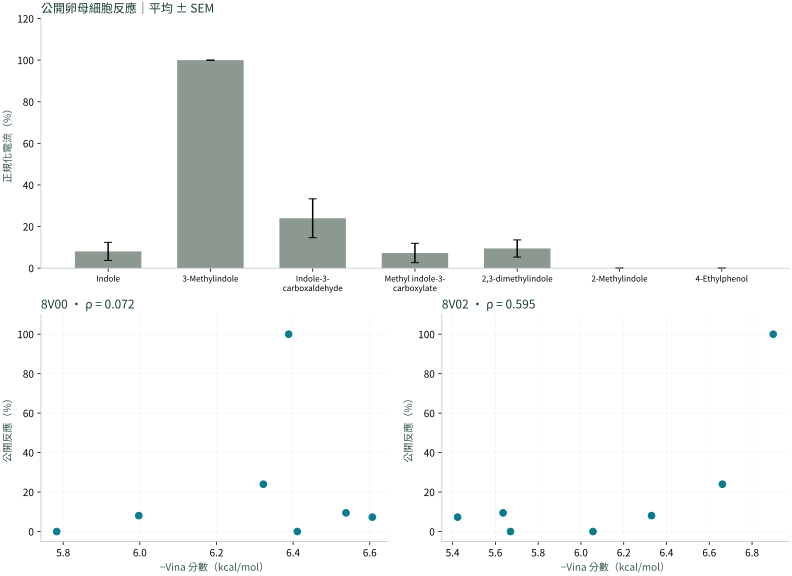
點圖放大 ↗ 上：公開 AaegOR10（埃及斑蚊 Aedes aegypti 的第 10 號氣味受體） (Zhao et al., 2024 ) ／AaegOrco（埃及斑蚊的氣味受體共同受體） 卵母細胞電流，以 3-methylindole 正規化；每種氣味九個卵母細胞，顯示平均 ± SEM（平均值標準誤，描述估計平均值的不確定度） 。正規化參考的 SEM 為零，不代表原始測量沒有變異。下：本研究靜態 docking（分子對接：搜尋分子在受體中的位置與朝向，並計算分數） (Trott & Olson, 2010 ) 分數與相同七個反應平均比較。Assay（依特定條件進行的生物活性測試） 與結構複合體使用不同 Orco（氣味受體共同受體，與辨識氣味的 OR 一起組成離子通道） ，篩選濃度仍待核實；本組與 29 種氣味的鈣訊號 assay 分開分析。 公開資料來源: (Pullmann-Lindsley et al., 2024 ) . 擴充氣味組合為何不能直接合併
Bohbot 等人提供另一套 30 種氣味篩選，使用 HEK293 鈣訊號及 AgOrco。我們以 Supplemental Table I 核對身分，從圖 2 讀取 AaOR10 反應平均，並非取得原始重複觀測。排除 ammonium hydroxide 後有 29 種可對接氣味，與最初七種有標籤氣味無重疊，因此合計為兩個 assay（依特定條件進行的生物活性測試） 的 36 種不同可對接氣味，不能合併成同一反應尺度。(Bohbot et al., 2011 )
四種有機酸分別評估帶電與中性形式，兩種未指定立體化學的氣味展開替代異構物。主分析使用取整數的圖讀均值，低柱不代表確定不活化。MD 口袋代表為 3–5 ns（奈秒，10⁻⁹ 秒） 分群取得的實際 medoid（從已取樣構型中選出的群集代表構型） 影格；等權平均是描述性做法，不是熱力學權重。
29 種氣味中，MD A／B 的 0.407／0.338 均低於靜態 apo 的 0.450。僅配體控制中，重原子數為 0.081，中性 cLogP（計算的辛醇／水分配係數對數，用來描述親脂性） 為 −0.012；後加的芳香環數量比較達 0.790。因此化學組成與事後選擇偏差仍可能影響結果，探索性區間也未納入實驗誤差及化學相依性。
縮短分子與候選入口的距離 沒有觀察到進入，是否只是分子尚未碰到受體？
證據｜觀察到什麼 分子會接觸膜或受體，但分析的軌跡未達持續進入口袋（受體內可容納配體的局部凹穴） 的判準；從入口附近開始、長達 10 ns（奈秒，10⁻⁹ 秒） 的模擬也沒有觀察到持續進入。
學習｜結果代表什麼 在目前取樣時間內，讓分子靠近或提高局部可接觸的分子數，仍未解決入口通行問題。
改變｜下一輪做什麼 改從已知結合位置探索候選出口，以定位阻礙通行的位置。
展開設計 → 建構 → 測試 → 學習 → 再設計
Design｜目的 區分分子到達受體表面，以及真正進入結合口袋（受體內可容納配體的局部凹穴） 這兩件事。
Build｜建構 將 o-cresol（鄰甲酚，又稱 2-methylphenol；8V02 中觀察到的氣味分子） (Zhao et al., 2024 ) 放在外部水相、水–膜界面，以及 S3／S6（OR10 第三與第六段跨膜螺旋的結構編號） 候選入口附近。先以較低與較高分子數的水層配置探索接觸機會，再直接縮短起始擴散距離。
Test｜測試與結果 追蹤口袋距離、受體接觸與持續佔據情形。已分析軌跡呈現表面與膜接觸，但沒有持續進入。濃度探索仍屬初步觀察，未建立濃度–反應關係。
Learn｜學習 起點靠近不保證入口可通行。奈秒尺度內未見事件，也不能證明自然進入不可能發生。
Redesign｜再設計 由實驗觀察到的結合姿態探索向外移動，並另行測試受體側面入口的開啟運動。
方法示意
三種增加接觸機會的設計 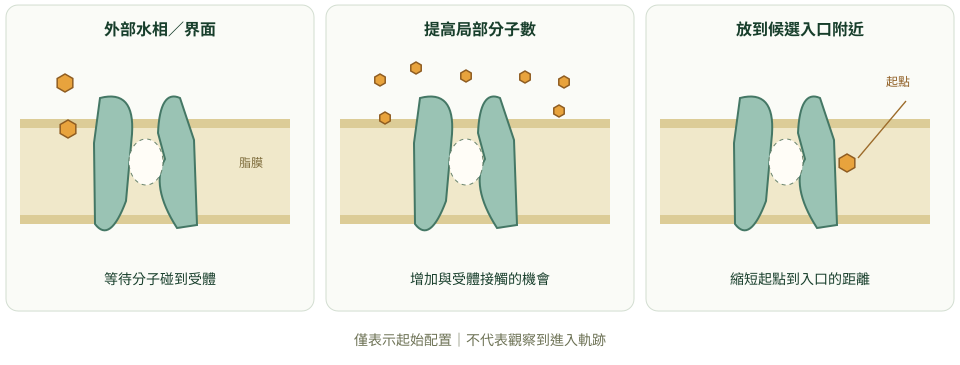
點圖放大 ↗ 以起始放置方式，區分分子擴散到受體與進入口袋（受體內可容納配體的局部凹穴） 。橘色表示氣味分子起點，第一格的水相與界面為兩種替代配置；圖中沒有畫出實際進入軌跡。已分析模擬中，增加可接觸分子或縮短起始距離仍未建立持續進入；濃度比較屬探索性研究。 本研究計算結果
嘗試進入時的距離與接觸變化 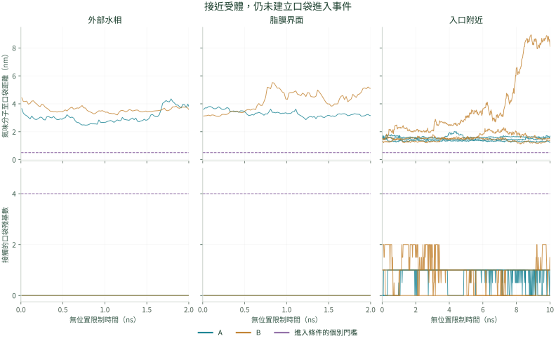
點圖放大 ↗ 外部水相、脂膜界面與入口附近放置後的實際無位置限制軌跡，以 20 ps（皮秒，10⁻¹² 秒） 區間中位數繪圖。A／B 表示兩個起始模型，納入這些配置的全部已分析軌跡。虛線分別為進入條件：距口袋（受體內可容納配體的局部凹穴） ≤0.5 nm（奈米；1 nm＝10⁻⁹ 公尺） ，且接觸至少 4 個口袋殘基（距離 ≤0.45 nm），兩者須同時持續 100 ps。完整影格分析未見進入。三組觀察窗分別為 2 ns（奈秒，10⁻⁹ 秒） 與 10 ns，不能用本圖估計相對進入機率。 完整研究證據
分子可接觸性：1 個與 20 個氣味分子
控制起始配置與濃度的意義
濃度探索以相同起始受體快照與盒子，比較 1 個及 20 個 o-cresol（鄰甲酚，又稱 2-methylphenol；8V02 中觀察到的氣味分子） (Zhao et al., 2024 ) 。第一個分子位置共用，其餘分子在外側水層依排除碰撞規則放置。起始盒子約 19 × 20 × 17 nm（奈米；1 nm＝10⁻⁹ 公尺） ，整盒名目濃度約 0.26、5.2 mM；它們不是水相有效濃度或空氣 ppm，週期盒也沒有維持分離的濃度庫。
已有完整 2 ns（奈秒，10⁻⁹ 秒） 觀察構成不完整、未平衡的探索性比較。較多分子產生部分表面接觸，但未見持續進入口袋（受體內可容納配體的局部凹穴） 。下表僅採完成並受檢軌跡，列每分子蛋白接觸時間比例的平均；未完成觀察不納入。蛋白表面接觸也包含 OR10（埃及斑蚊 Aedes aegypti 的第 10 號氣味受體） (Zhao et al., 2024 ) 口袋以外區域。
起始模型 1 個分子 20 個分子
A 0.000 0.036 B 0.000 0.021
這個比較能回答什麼
共享同一受體的多個分子不是獨立實驗。即使沒有更強結合，20 個分子中最近的一個通常也會比單一分子更近。進入必須由同一分子符合距離、殘基接觸及持續時間，不能拼接不同分子的接觸。這些觀察尚未建立濃度–反應曲線或物理結合速率。
入口附近研究接著直接縮短起始距離，將無位置限制觀察延長至 10 ns；它與外部水相濃度比較是不同配置。仍未見持續進入，因此改由已知結合姿態探索向外路徑。
入口變寬、等待更久，分子就能離開嗎？ 向外牽引，或讓入口更接近 apo（未結合氣味分子的狀態） 幾何，能否產生完整出口事件？
證據｜觀察到什麼 初期向外牽引受到阻礙。引導 S3／S6（OR10 第三與第六段跨膜螺旋的結構編號） (Zhao et al., 2024 ) 距離並延長觀察至 70 ns（奈秒，10⁻⁹ 秒） 後，入口幾何有變化，但仍未見持續移出。
學習｜結果代表什麼 入口距離改變，不等同於形成能容納完整分子的連續通道。
改變｜下一輪做什麼 在保存構型中搜尋完整分子的通行路線，並定位沿路的局部碰撞。
展開設計 → 建構 → 測試 → 學習 → 再設計
Design｜目的 分開檢驗直接拉配體（能與受體結合的分子，此處指受測氣味分子） 與引導受體入口，並在相同觀察時程下，比較入口引導與無新增偏壓的對照。
Build｜建構 使用牽引式分子動力學（SMD（牽引式分子動力學：在 MD 中加入外力引導運動） (Isralewitz et al., 2001 ) ）探索向外移動。另一組測試則讓 S3／S6（OR10 第三與第六段跨膜螺旋的結構編號） (Zhao et al., 2024 ) 參考距離朝 apo（未結合氣味分子的狀態） 值調整，氣味分子本身不受直接牽引；將入口引導流程延長至總長 70 ns（奈秒，10⁻⁹ 秒） ，最後 1 ns 撤除偏置。
Test｜測試與結果 分別評估入口距離與分子離開情形。入口引導及無新增偏壓的 70 ns 軌跡都未達持續移出判準；初期向外 SMD 也未得到可供反向進入驗證的合格出口路線。
Learn｜學習 延長觀察增加了取樣重排的機會，但尚未揭示出口。受偏壓影響的模擬不測量自然停留時間；70 ns 未見事件，也不足以排除更慢的過程或其他路徑。
Redesign｜再設計 從單一入口距離指標，轉為明確搜尋完整氣味分子的位置與朝向，並把周圍脂質納入考量。
方法示意
施力的對象不同，問題也不同 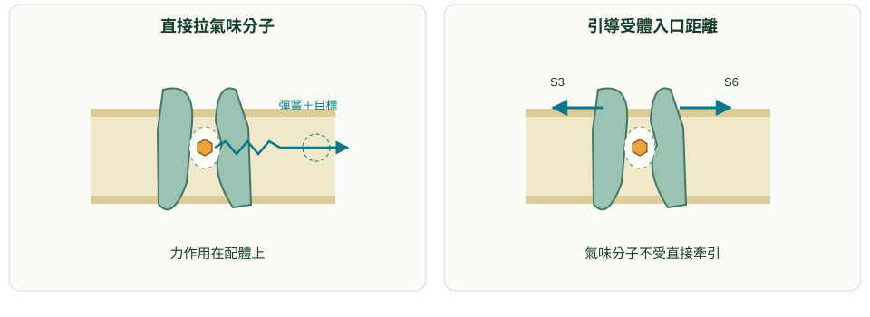
點圖放大 ↗ 左：SMD（牽引式分子動力學：在 MD 中加入外力引導運動） (Isralewitz et al., 2001 ) 以彈簧將氣味分子連接到移動目標。右：另一流程引導 S3／S6（OR10 第三與第六段跨膜螺旋的結構編號） (Zhao et al., 2024 ) 參考距離，分子本身不受直接牽引。藍色箭頭表示施加的引導，不是觀察到的軌跡。兩種方法皆研究受控條件，不能據此量測自然進出速率。 本研究計算結果
入口運動與分子移出是不同的指標 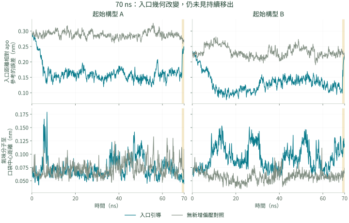
點圖放大 ↗ 兩個起始構型的 70 ns（奈秒，10⁻⁹ 秒） 軌跡。上方為 S3／S6（OR10 第三與第六段跨膜螺旋的結構編號） (Zhao et al., 2024 ) 參考距離相對 apo（未結合氣味分子的狀態） 值的誤差，下方為氣味分子到口袋（受體內可容納配體的局部凹穴） 中心的距離。為方便閱讀，以每 0.1 ns 區間的中位數繪線；底色標示最後撤除偏置的區間。完整保存影格分析未見持續移出；入口距離誤差降低不等同通道可通行。 本研究計算結果
直接看 MD 保存的結構 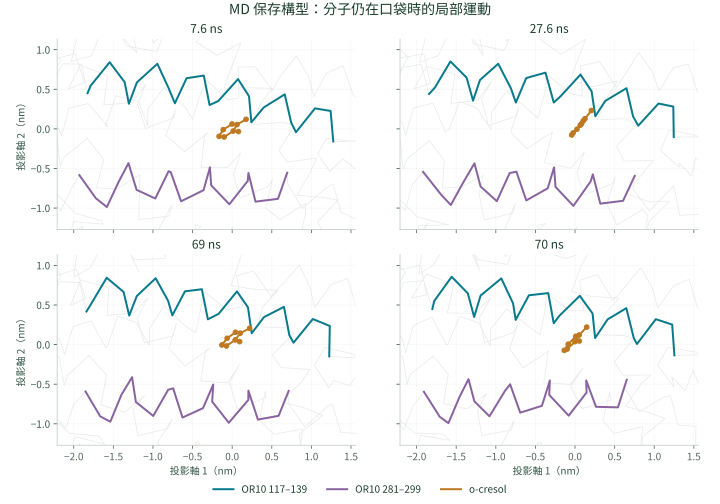
點圖放大 ↗ 同一條入口引導 A 軌跡在 7.6、27.6、69 與 70 ns（奈秒，10⁻⁹ 秒） 保存的座標。所有影格以 OR10（埃及斑蚊 Aedes aegypti 的第 10 號氣味受體） (Zhao et al., 2024 ) Cα（α 碳原子，用來描述蛋白質主鏈骨架） 對齊第一格，採相同投影與比例。藍綠與紫色標出鄰近口袋（受體內可容納配體的局部凹穴） 的 117–139、281–299 區段，橘色是實際 o-cresol（鄰甲酚，又稱 2-methylphenol；8V02 中觀察到的氣味分子） 重原子；最後一格位於撤除偏壓之後。局部幾何改變時，配體（能與受體結合的分子，此處指受測氣味分子） 仍在口袋附近。二維投影不能判斷空間是否可通行，選取的快照也不代表連續進出路徑。 完整研究證據
牽引與入口引導如何逐步演進
先探索向外，再決定是否反向驗證
最初 SMD（牽引式分子動力學：在 MD 中加入外力引導運動） (Isralewitz et al., 2001 ) 設計沿候選引導線將 o-cresol（鄰甲酚，又稱 2-methylphenol；8V02 中觀察到的氣味分子） (Zhao et al., 2024 ) 向外拉，計畫在取得合格出口後反向測試進入。向外嘗試都在滿足出口條件前出現過大的目標落後量，因此沒有合格出口可反向驗證，未執行原定反向進入測試。由結合態起始的基線佔據也不算新進入事件。
SMD 在分子座標與移動目標之間施加彈簧，並限制偏離路線的橫向運動；目標移動作功與偏置改變作功分開追蹤。非平衡作功及短暫保留，都不能直接當作 PMF（平均力位能：沿指定反應座標的自由能曲線） 、結合自由能、敏感度或自然進入動力學。
引導受體入口的實驗
受體引導控制 S3（OR10 第三與第六段跨膜螺旋的結構編號） (Zhao et al., 2024 ) 三段 Cα（α 碳原子，用來描述蛋白質主鏈骨架） （123–127、130–134、136–140）與 S6 三段（289–293、282–286、277–281）之間的九組距離，使其朝實驗 apo（未結合氣味分子的狀態） 參考值變化。每組彈簧常數為 3000／9 kJ mol⁻¹ nm（奈米；1 nm＝10⁻⁹ 公尺） ⁻²；這些集體距離不是通道半徑。短程入口引導未達預設距離及方向進度條件，因此該引導組未接續拉配體（能與受體結合的分子，此處指受測氣味分子） 。
階段 短程流程 延長流程 70 ns（奈秒，10⁻⁹ 秒） 流程
基線 0.1 ns 0.1 ns 0.1 ns 漸變目標 1 ns 5 ns 5 ns 固定目標 0.5 ns 2.5 ns 63.9 ns 撤除偏壓後 1 ns 1 ns 1 ns 軌跡總長 2.6 ns 8.6 ns 70 ns
以配對對照判讀入口幾何
短程至延長比較中，較慢調整與較長固定時間對起始構型 A 的入口距離誤差改善，比 B 更明顯；配對時間差分別為 −0.0663、−0.0187 nm。此設計同時改變目標速度及固定時間，無法分離兩者效果。引導與無新增偏壓的 70 ns 軌跡仍未見持續移出。
出口候選須距口袋（受體內可容納配體的局部凹穴） 參考至少 1.5 nm、指定口袋殘基接觸數為零，且在同一階段持續至少 100 ps（皮秒，10⁻¹² 秒） ；事件須同時標明偏壓狀態。接近 apo 距離或短暫符合施力門檻，都不等於分子已通過。
本研究計算結果
短程與延長入口引導比較 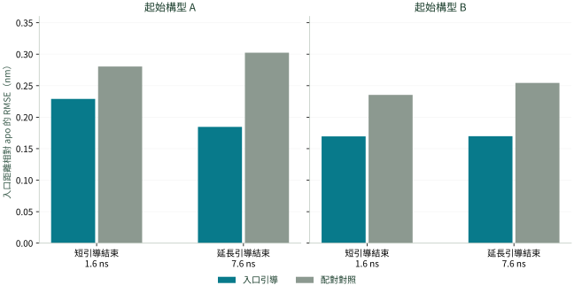
點圖放大 ↗ 撤力前最後 100 ps（皮秒，10⁻¹² 秒） 的入口距離 RMSE（均方根誤差：相對指定參考值的整體誤差） ，與相同時間點的無新增偏壓對照比較；各起始構型分開呈現。延長流程同時改變目標漸變與固定時間。RMSE 降低表示更接近選定 apo（未結合氣味分子的狀態） 距離，不等於通道更寬或可通行；這是相關軌跡間的描述性比較。 從幾何空隙，走向可檢驗的分子路徑 當周圍環境改變時，完整氣味分子能否沿候選走廊平移、旋轉並通過？
證據｜觀察到什麼 搜尋得到兩個候選方向，但在 24 個保存構型的完整分子搜尋中，仍未找到無碰撞的完整路徑。動態沿路牽引與延長局部等待，也未產生完整出口。
學習｜結果代表什麼 局部側鏈與脂質排列會影響碰撞。協同運動是值得測試的解釋，但尚未證明分子移動會誘導入口開啟。
改變｜下一輪做什麼 設計有對照的小步移動與鬆弛測試，同時追蹤分子及周圍環境。
展開設計 → 建構 → 測試 → 學習 → 再設計
Design｜目的 區分點狀探針、完整剛性分子，以及可動的分子環境。只有幾何中心線，尚不能證明可通行。
Build｜建構 找出 S3／S6（OR10 第三與第六段跨膜螺旋的結構編號） (Zhao et al., 2024 ) 側向與膜座標較低方向兩條候選走廊。固定受體與脂質，搜尋包含全部 16 個原子的 o-cresol（鄰甲酚，又稱 2-methylphenol；8V02 中觀察到的氣味分子） 平移及旋轉；接著允許環境移動進行沿路 SMD（牽引式分子動力學：在 MD 中加入外力引導運動） (Isralewitz et al., 2001 ) ，把局部等待從 0.5 延至 2 ns（奈秒，10⁻⁹ 秒） ，再將剛性搜尋擴展到 70 ns 軌跡中的 24 個構型。
Test｜測試與結果 測試的靜態構型皆未提供完整無碰撞路徑。柔性外拉偶爾短暫跟上目標，但沒有持續解除受阻或移出。選定路徑中，蛋白加脂質排斥最低的個案仍有 L128（第 128 位白胺酸） 、Q292（第 292 位麩醯胺酸） 、S291（第 291 位絲胺酸） 與附近脂質碰撞。排斥分數用於碰撞診斷，不是自由能障。
Learn｜學習 目前只搜尋兩條有限走廊，未涵蓋所有走法。保存構型彼此相關，不是獨立實驗；也不能拼接不同構型中較寬的片段，宣稱得到觀察到的軌跡。先前 SMD 已允許受體運動，仍未找到出口。
Redesign｜再設計 下一步提出小幅、受控的向外移動，接續局部鬆弛，並搭配不牽引對照。比較分子移動前後的側鏈、脂質與水重排，以區分不同機制。這項新設計尚未測試。
完整研究證據
從空隙探針到完整分子路徑
在保存構型中搜尋候選幾何
對保存構型進行最寬路徑圖搜尋，在 S3／S6（OR10 第三與第六段跨膜螺旋的結構編號） 附近找到候選空隙。47.6 ns（奈秒，10⁻⁹ 秒） 快照提示 I132（第 132 位異白胺酸） ／Y285（第 285 位酪胺酸） ／M288（第 288 位甲硫胺酸） 附近的側向路線；59 ns 則提示 L128（第 128 位白胺酸） ／I184（第 184 位異白胺酸） ／Q292（第 292 位麩醯胺酸） 附近、較低膜座標方向的路線。「較低」指所用座標系，不代表已確認胞內或胞外出口；實驗研究早已描述側面結構通道。(Zhao et al., 2024 )
使用 0.05 nm（奈米；1 nm＝10⁻⁹ 公尺） 網格、只納入蛋白障礙時，7.6、47.6、59 ns 的候選球形探針半徑下界為 0.089、0.102、0.119 nm。加入脂質並由共同候選集中重新選路後，為 0.089、0.077、0.086 nm；不同障礙模型可能選到不同路線。這些是特定中心線的半徑下界，不是氣味分子尺寸或所有可能通道的上限。
網格間距會改變結果：59 ns 蛋白候選由粗網格的 0.091 nm 變為細網格的 0.119 nm。另以方向錐與較大搜尋範圍測試敏感度；不同終點方向可能共享瓶頸，不能認定為不同通道。
本研究計算結果
完整分子測試前的候選空隙 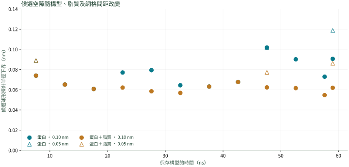
點圖放大 ↗ 同一條受引導軌跡的候選球形探針半徑下界，比較 0.10、0.05 nm（奈米；1 nm＝10⁻⁹ 公尺） 網格，以及僅蛋白、蛋白加脂質障礙；空心三角形為細網格評估。各障礙模型從相同候選集中選路，但可能選到不同路徑。這是靜態中心線診斷，不是觀察到的配體（能與受體結合的分子，此處指受測氣味分子） 軌跡，各時間點也非獨立實驗；網格敏感度限制了通道寬度已收斂的推論。 為何點探針路線仍不足以證明可通行
將完整 o-cresol（鄰甲酚，又稱 2-methylphenol；8V02 中觀察到的氣味分子） (Zhao et al., 2024 ) 以不同朝向放到候選位置後，可見口袋（受體內可容納配體的局部凹穴） 之外的原子重疊。某條 47.6 ns 候選路徑在離起點 0.35 nm 以外，最擁擠位置即使採受測最佳朝向，仍有約 0.16 nm 硬球重疊；起點約為 0.05 nm。原位姿態在硬球模型也可能重疊，因此不能單憑零重疊作物理通行判定。
下一輪在 63.2 ns 結構中搜尋完整配體（能與受體結合的分子，此處指受測氣味分子） 的位置與朝向，檢查相鄰姿態連續性，以及僅蛋白、蛋白加脂質的排斥；再以 0.2、0.5 nm/ns 的可動受體沿路 SMD（牽引式分子動力學：在 MD 中加入外力引導運動） (Isralewitz et al., 2001 ) 測試候選。目標與配體實際運動未能同步，將固定目標等待延長至 2 ns，也沒有建立持續移出。
構型集合分析接著評估兩個起始結構、引導／對照條件的 24 個保存構型，以及兩條走廊、兩種障礙目標。已評估選定路線仍未建立低碰撞通道；最低合併排斥峰約 3.34 × 10⁴ kJ/mol，而原位參考約 23 kJ/mol。Lennard–Jones（描述原子交互作用的位能；此處碰撞掃描只加總其中的正值排斥部分） 正值排斥僅為碰撞診斷，不能把不同構型各自的路徑片段拼成一條已觀察的連續軌跡。
最初 63.2 ns 完整配體路徑搜尋
此固定結構搜尋將走廊半徑從 0.30 擴至 0.50 nm，並把候選延伸至距起始配體中心 2.0 nm。插入中間姿態，使各原子相鄰取樣間的移動弧長不超過 0.02 nm；配體內部扭轉暫時固定。下表僅描述這個快照，與後來的構型集合分析分開呈現。
相同正值排斥診斷下，原位姿態約為 15.8 kJ/mol。蛋白瓶頸涉及 L128／S291（第 291 位絲胺酸） ／Q292 或 L128／M288／I132；合併障礙的最大值主要來自 POPC（一種磷脂醯膽鹼脂質，此處用來建立模擬脂膜） 。此分數未含吸引項、靜電、水與熵，不能解讀為自由能障或穿越所需的功；搜尋也只涵蓋兩條有限走廊。
走廊 中心線弧長（nm） 蛋白排斥峰（kJ/mol） 蛋白＋脂質排斥峰（kJ/mol）
較低膜座標方向 3.27 12,005 555,394 S3／S6 側向 4.03 29,838 103,961
可動構型牽引：目標移動與配體移動的差別
沿路 SMD 牽引配體中心，允許配體旋轉及受體、脂質、水移動，並未強制沿用固定搜尋的全部朝向。落後目標達 0.40 nm 或力達 180 kJ mol⁻¹ nm⁻¹ 時，停止目標推進；須同時降至 0.20 nm 與 100 kJ mol⁻¹ nm⁻¹ 以下才可恢復。固定目標期間，MD（分子動力學：依力場逐步計算原子如何運動） (Eastman et al., 2024 ) 與彈簧作用力仍持續。
受測牽引條件中，配體距口袋最遠僅 0.139–0.190 nm，始終至少接觸八個口袋殘基；目標沿彎曲路線走過 0.469–0.947 nm，峰值力約 274–304 pN。目標弧長不是配體位移或離開百分比。2 ns 無牽引對照最遠為 0.126 nm；各觀察時長不同，這些極值僅供描述，不能當成相配的速率比較。
概念示意，並非分子軌跡或已驗證通道。綠色代表受體環境，米色圓點為附近脂質，橘色為氣味分子。候選幾何、立體可行性與實際通行，必須分開檢驗。 本研究計算結果
配體是否跟得上牽引目標？ 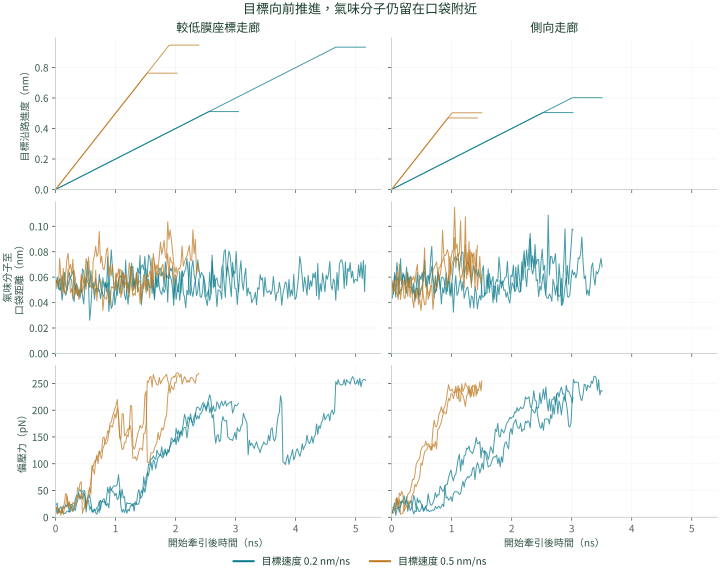
點圖放大 ↗ 沿兩條候選走廊、以兩種名義目標速度進行的向外 SMD（牽引式分子動力學：在 MD 中加入外力引導運動） (Isralewitz et al., 2001 ) 。時間從共同的 0.1 ns（奈秒，10⁻⁹ 秒） 基線之後起算，曲線為 20 ps（皮秒，10⁻¹² 秒） 區間中位數。落後距離或施力過大時固定目標，因此出現平台。目標沿路進度、配體（能與受體結合的分子，此處指受測氣味分子） 至口袋（受體內可容納配體的局部凹穴） 距離、偏壓力是三種不同指標：目標前進並未建立分子逃離。這些模擬中受體與周圍環境可動；施加的力不是量得的自然移出能障。 本研究計算結果
多等待一段時間，能否解除局部受阻？ 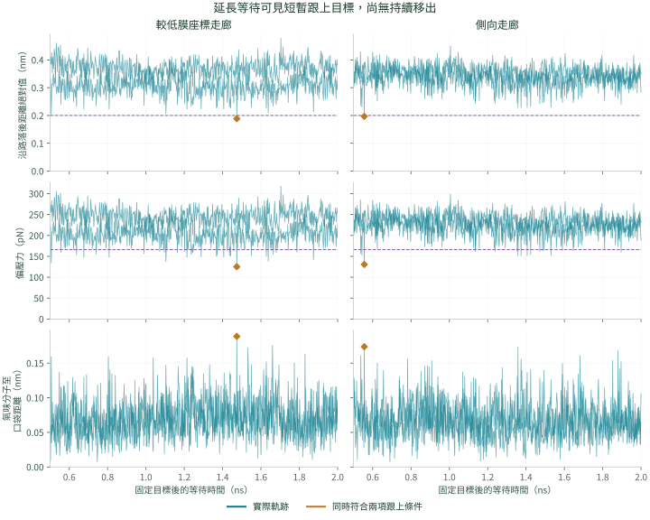
點圖放大 ↗ 較慢牽引條件出現落後後，將目標固定。本圖呈現總等待時間由 0.5 延長至 2 ns（奈秒，10⁻⁹ 秒） 的部分，保留原始 2 ps（皮秒，10⁻¹² 秒） 取樣。跟上條件須同時滿足沿路落後距離 ≤0.20 nm（奈米；1 nm＝10⁻⁹ 公尺） 與偏壓力 ≤100 kJ/mol/nm（約 166 pN）；橘色菱形標示同時達標的個別影格。這些短暫事件未持續 100 ps，也未觀察到持續移出。於已測時間窗內，延長局部等待仍未解除受阻。 本研究計算結果
換一個受體構型，就有路可走嗎？ 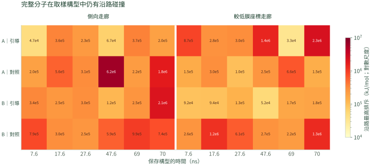
點圖放大 ↗ 選定完整分子路線中，蛋白加脂質的最高 Lennard–Jones（描述原子交互作用的位能；此處碰撞掃描只加總其中的正值排斥部分） 正值排斥。各起始構型在列出時間取快照，分別評估兩條走廊。較低值表示此診斷中的嚴重碰撞較少，不代表已驗證可通行；最低的沿路峰值仍遠高於原始結合姿態參考。這些數值不是自由能障，相關快照也不是獨立實驗。 本研究計算結果
定位候選路徑上的阻礙 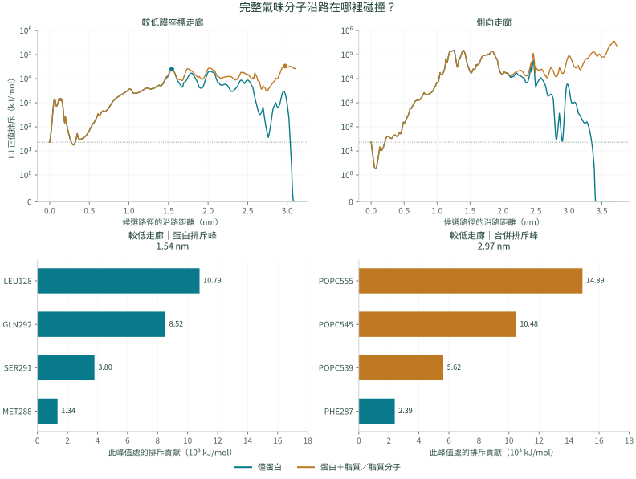
點圖放大 ↗ 對入口引導 A 的 69 ns（奈秒，10⁻⁹ 秒） 快照，細看固定構型下的分子放置掃描；其較低走廊是已評估選定路線中，合併排斥峰最低者。上方對同一批配體（能與受體結合的分子，此處指受測氣味分子） 姿態分別計算蛋白與蛋白加脂質排斥，點線是原始姿態參考（約 23 kJ/mol）。下方列出較低走廊兩個不同峰值處的前四大貢獻：蛋白峰在 1.54 nm（奈米；1 nm＝10⁻⁹ 公尺） ，合併峰在 2.97 nm。候選路線先後遇到蛋白殘基與脂質阻礙。橫軸是沿路距離，不是模擬時間；LJ（描述原子交互作用的位能；此處碰撞掃描只加總其中的正值排斥部分） 正值排斥是碰撞診斷，並非自由能曲線。 完整研究證據
完整證據支持到哪裡
目前結果與仍需完成的驗證
目前建立了可追溯資料、控制特徵比較、突變查核、跨物種轉移測試，以及膜 MD（分子動力學：依力場逐步計算原子如何運動） (Eastman et al., 2024 ) ／路徑研究流程。序列改善物種內預測；已完成分子量消融、實測 IR（紅外線吸收：分子對不同振動頻率光線的吸收） 、量子振動與 OpenPOM（Principal Odor Map；OpenPOM 為其開源重現版，用來學習分子氣味特徵） (Lee et al., 2023 ; Barsainyan et al., 2023 ) 比較，顯示效果依模型而變，頻譜或固定嗅覺 AI 尚未帶來穩定全面增益。額外結構特徵、專一性突變及直接跨物種轉移仍未驗證。參考 MD 揭露候選進出路線的限制，尚未證明分子誘發開口或完整穿越。
下一項驗證 完成後能回答的問題
訓練折內 AI 微調、三維氣味描述及獨立資料 更完整的特徵能否改善相對原基準的反應預測？ 替代迴圈假說與局部漂移分析 結論多大程度依賴不確定的起始區域？ 果蠅目標 WT（wild type，未加入設計突變的野生型序列） ／突變 OR（odorant receptor，負責辨識氣味的受體次單元） (Zhao et al., 2024 ) –Orco（氣味受體共同受體，與辨識氣味的 OR 一起組成離子通道） 複合體 與候選相關的動態差異能否重現？ 無來源重疊的功能資料與巢狀跨物種評估 對未見受體與 assay（依特定條件進行的生物活性測試） 是否仍有效？ 相配的表達與功能濃度反應實驗 受體設計是否改變活化、專一性或敏感度？ 連續可動路徑與無偏壓後續觀察 撤除外力後，受引導路線是否仍有物理可行性？
數據與可追溯性
各結果圖提供繪圖數值，證據表保留單位及分析窗口；來源檔案雜湊列於 provenance。模型比較採保存的折外預測，docking（分子對接：搜尋分子在受體中的位置與朝向，並計算分數） (Trott & Olson, 2010 ) ／路徑分析保留姿態層級輸出。不同研究保存的軌跡原子集合有所不同，不能假定每個水與脂質尾部座標皆有連續留存。
下一輪｜待測設計
下一輪設計：改善預測，檢驗協同運動 特徵比較支持保留原預測器作為基準；路徑研究則提供候選走廊與局部碰撞位置。下一步分別處理反應預測與分子進出的問題。
以訓練折內擬合比較固定與任務微調的分子特徵，再以獨立功能資料驗證；LORAX 及新增三維尺寸描述仍屬待測實驗。(McConachie et al., 2026 ) 比較小步分子引導與相配的不牽引對照，追蹤相同的局部結構量。 以連續分子位置、碰撞與撤力後行為檢查路徑；建立可用出口後，才進行反向進入驗證。 在一致條件下進行功能濃度–反應實驗，再評估受體設計是否改善專一性或敏感度。 待測研究｜此處尚無新循環的實驗結果。
待測設計
以對照實驗檢驗協同運動 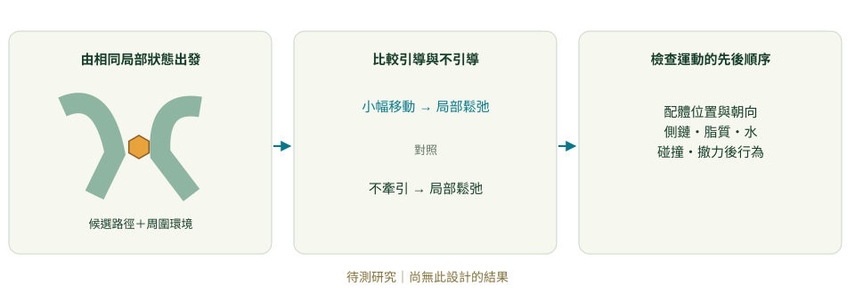
點圖放大 ↗ 下一輪擬比較小幅引導分子移動後的局部鬆弛，以及相配的不牽引條件；追蹤側鏈、脂質、水的重排相對於分子運動的先後。這是未來的比較設計，不是已確立的機制或已完成的實驗。 參考文獻與數據 正文以作者與年份短引文連至下方完整書目；圖說分別標示公開資料來源與本研究計算。未標示出版日期的文件以 n.d.（無日期）註記。
Barsainyan et al., 2023 Barsainyan, A. A., Kumar, R., Saha, P., & Schmuker, M. (2023). OpenPOM — Open Principal Odor Map [Software; revision 5434c4b7badebca8e7d180aa34d2f787402121ee]. Retrieved October 11, 2026. https://github.com/BioMachineLearning/openpom/tree/5434c4b7badebca8e7d180aa34d2f787402121ee Benjamini & Hochberg, 1995 Benjamini, Y., & Hochberg, Y. (1995). Controlling the False Discovery Rate: A Practical and Powerful Approach to Multiple Testing. Journal of the Royal Statistical Society Series B: Statistical Methodology , 57(1), 289–300. https://doi.org/10.1111/j.2517-6161.1995.tb02031.x Berman et al., 2000 Berman, H. M., Westbrook, J., Feng, Z., Gilliland, G., Bhat, T. N., Weissig, H., Shindyalov, I. N., & Bourne, P. E. (2000). The Protein Data Bank. Nucleic Acids Research , 28(1), 235–242. https://doi.org/10.1093/nar/28.1.235 Block et al., 2015 Block, E., et al. (2015). Implausibility of the vibrational theory of olfaction. Proceedings of the National Academy of Sciences, 112(21), E2766–E2774. https://doi.org/10.1073/pnas.1503054112 Bohbot et al., 2011 Bohbot, J. D., Jones, P. L., Wang, G., Pitts, R. J., Pask, G. M., & Zwiebel, L. J. (2011). Conservation of Indole Responsive Odorant Receptors in Mosquitoes Reveals an Ancient Olfactory Trait. Chemical Senses , 36(2), 149–160. https://doi.org/10.1093/chemse/bjq105 Carey et al., 2010 Carey, A. F., Wang, G., Su, C. Y., Zwiebel, L. J., & Carlson, J. R. (2010). Odorant reception in the malaria mosquito Anopheles gambiae. Nature , 464(7285), 66–71. https://doi.org/10.1038/nature08834 Chacko et al., 2020 Chacko, R., Jain, D., Patwardhan, M., Puri, A., Karande, S., & Rai, B. (2020). Data based predictive models for odor perception. Scientific Reports, 10, 17136. https://doi.org/10.1038/s41598-020-73978-1 de Fouchier et al., 2017 de Fouchier, A., Walker, W. B., Montagné, N., Steiner, C., Binyameen, M., Schlyter, F., Chertemps, T., Maria, A., François, M. C., Monsempes, C., Anderson, P., Hansson, B. S., Larsson, M. C., & Jacquin-Joly, E. (2017). Functional evolution of Lepidoptera olfactory receptors revealed by deorphanization of a moth repertoire. Nature Communications , 8, 15709. https://doi.org/10.1038/ncomms15709 Eastman et al., 2024 Eastman, P., Galvelis, R., Peláez, R. P., Abreu, C. R. A., Farr, S. E., Gallicchio, E., Gorenko, A., Henry, M. M., Hu, F., Huang, J., Krämer, A., Michel, J., Mitchell, J. A., Pande, V. S., Rodrigues, J. P., Rodriguez-Guerra, J., Simmonett, A. C., Singh, S., Swails, J., Turner, P., Wang, Y., Zhang, I., Chodera, J. D., De Fabritiis, G., & Markland, T. E. (2024). OpenMM 8: Molecular Dynamics Simulation with Machine Learning Potentials. The Journal of Physical Chemistry B , 128(1), 109–116. https://doi.org/10.1021/acs.jpcb.3c06662 Eberhardt et al., 2021 Eberhardt, J., Santos-Martins, D., Tillack, A. F., & Forli, S. (2021). AutoDock Vina 1.2.0: New Docking Methods, Expanded Force Field, and Python Bindings. Journal of Chemical Information and Modeling , 61(8), 3891–3898. https://doi.org/10.1021/acs.jcim.1c00203 Franco et al., 2011 Franco, M. I., Turin, L., Mershin, A., & Skoulakis, E. M. C. (2011). Molecular vibration-sensing component in Drosophila melanogaster olfaction. Proceedings of the National Academy of Sciences, 108(9), 3797–3802. https://doi.org/10.1073/pnas.1012293108 Gabler et al., 2013 Gabler, S., Soelter, J., Hussain, T., Sachse, S., & Schmuker, M. (2013). Physicochemical vs. Vibrational Descriptors for Prediction of Odor Receptor Responses. Molecular Informatics, 32(9–10), 855–865. https://doi.org/10.1002/minf.201300037 Grossfield et al., 2018 Grossfield, A., Patrone, P. N., Roe, D. R., Schultz, A. J., Siderius, D., & Zuckerman, D. M. (2018). Best Practices for Quantification of Uncertainty and Sampling Quality in Molecular Simulations [Article v1.0]. Living Journal of Computational Molecular Science , 1(1), 5067. https://doi.org/10.33011/livecoms.1.1.5067 Hallem & Carlson, 2006 Hallem, E. A., & Carlson, J. R. (2006). Coding of Odors by a Receptor Repertoire. Cell , 125(1), 143–160. https://doi.org/10.1016/j.cell.2006.01.050 Harada et al., 2025 Harada, Y., Maeda, S., Shen, J., Misonou, T., Hori, H., & Nakamura, S. (2025). Motional representation; the ability to predict odor characters using molecular vibrations [Preprint]. arXiv, 2509.16245. https://arxiv.org/abs/2509.16245 Isralewitz et al., 2001 Isralewitz, B., Baudry, J., Gullingsrud, J., Kosztin, D., & Schulten, K. (2001). Steered molecular dynamics investigations of protein function. Journal of Molecular Graphics and Modelling , 19(1), 13–25. https://doi.org/10.1016/s1093-3263(00)00133-9 Jacquin-Joly et al., 2012 Jacquin-Joly, E., Legeai, F., Montagné, N., Monsempes, C., François, M. C., Poulain, J., Gavory, F., Walker III, W. B., Hansson, B. S., & Larsson, M. C. (2012). Candidate chemosensory Genes in Female Antennae of the Noctuid Moth Spodoptera littoralis. International Journal of Biological Sciences , 8(7), 1036–1050. https://doi.org/10.7150/ijbs.4469 Jakalian et al., 2002 Jakalian, A., Jack, D. B., & Bayly, C. I. (2002). Fast, efficient generation of high‐quality atomic charges. AM1‐BCC model: II. Parameterization and validation. Journal of Computational Chemistry , 23(16), 1623–1641. https://doi.org/10.1002/jcc.10128 Jorgensen et al., 1983 Jorgensen, W. L., Chandrasekhar, J., Madura, J. D., Impey, R. W., & Klein, M. L. (1983). Comparison of simple potential functions for simulating liquid water. The Journal of Chemical Physics , 79(2), 926–935. https://doi.org/10.1063/1.445869 Jumper et al., 2021 Jumper, J., Evans, R., Pritzel, A., Green, T., Figurnov, M., Ronneberger, O., Tunyasuvunakool, K., Bates, R., Žídek, A., Potapenko, A., Bridgland, A., Meyer, C., Kohl, S. A. A., Ballard, A. J., Cowie, A., Romera-Paredes, B., Nikolov, S., Jain, R., Adler, J., Back, T., Petersen, S., Reiman, D., Clancy, E., Zielinski, M., Steinegger, M., Pacholska, M., Berghammer, T., Bodenstein, S., Silver, D., Vinyals, O., Senior, A. W., Kavukcuoglu, K., Kohli, P., & Hassabis, D. (2021). Highly accurate protein structure prediction with AlphaFold. Nature , 596(7873), 583–589. https://doi.org/10.1038/s41586-021-03819-2 Kim et al., 2025 Kim, S., Chen, J., Cheng, T., Gindulyte, A., He, J., He, S., Li, Q., Shoemaker, B. A., Thiessen, P. A., Yu, B., Zaslavsky, L., Zhang, J., & Bolton, E. E. (2025). PubChem 2025 update. Nucleic Acids Research , 53(D1), D1516–D1525. https://doi.org/10.1093/nar/gkae1059 Lee et al., 2023 Lee, B. K., Mayhew, E. J., Sanchez-Lengeling, B., Wei, J. N., Qian, W. W., Little, K. A., Andres, M., Nguyen, B. B., Moloy, T., Yasonik, J., Parker, J. K., Gerkin, R. C., Mainland, J. D., & Wiltschko, A. B. (2023). A principal odor map unifies diverse tasks in olfactory perception. Science, 381(6661), 999–1006. https://doi.org/10.1126/science.ade4401 Lin et al., 2023 Lin, Z., Akin, H., Rao, R., Hie, B., Zhu, Z., Lu, W., Smetanin, N., Verkuil, R., Kabeli, O., Shmueli, Y., dos Santos Costa, A., Fazel-Zarandi, M., Sercu, T., Candido, S., & Rives, A. (2023). Evolutionary-scale prediction of atomic-level protein structure with a language model. Science , 379(6637), 1123–1130. https://doi.org/10.1126/science.ade2574 Maier et al., 2015 Maier, J. A., Martinez, C., Kasavajhala, K., Wickstrom, L., Hauser, K. E., & Simmerling, C. (2015). ff14SB: Improving the Accuracy of Protein Side Chain and Backbone Parameters from ff99SB. Journal of Chemical Theory and Computation , 11(8), 3696–3713. https://doi.org/10.1021/acs.jctc.5b00255 McConachie et al., 2026 McConachie, G., Duniec, E., Guerina, F., Younger, M., & DePasquale, B. (2026). Low rank adaptation of chemical foundation models generate effective odorant representations. International Conference on Learning Representations (ICLR 2026). https://proceedings.iclr.cc/paper_files/paper/2026/hash/cf277f3529fc80ab3665965283555b29-Abstract-Conference.html Mirdita et al., 2022 Mirdita, M., Schütze, K., Moriwaki, Y., Heo, L., Ovchinnikov, S., & Steinegger, M. (2022). ColabFold: making protein folding accessible to all. Nature Methods , 19(6), 679–682. https://doi.org/10.1038/s41592-022-01488-1 Münch & Galizia, 2016 Münch, D., & Galizia, C. G. (2016). DoOR 2.0 - Comprehensive Mapping of Drosophila melanogaster Odorant Responses. Scientific Reports , 6, 21841. https://doi.org/10.1038/srep21841 NIST, n.d. National Institute of Standards and Technology. (n.d.). NIST Chemistry WebBook, SRD 69: Infrared spectra and data guide [Database]. Retrieved October 11, 2026. https://webbook.nist.gov/chemistry/guide/ OpenMM contributors, n.d. OpenMM contributors. (n.d.). OpenMM User Guide 7.7: Running simulations, AMBER14 force fields [Software documentation; includes ff14SB and Lipid17 parameter-file descriptions]. Retrieved October 11, 2026. https://docs.openmm.org/7.7.0/userguide/application/02_running_sims.html#amber14 Pullmann-Lindsley et al., 2024 Pullmann-Lindsley, H., Huff, R. M., Boyi, J., & Pitts, R. J. (2024). Odorant receptors for floral- and plant-derived volatiles in the yellow fever mosquito, Aedes aegypti (Diptera: Culicidae). PLOS ONE , 19(5), e0302496. https://doi.org/10.1371/journal.pone.0302496 Saberi & Seyed-allaei, 2016 Saberi, M., & Seyed-allaei, H. (2016). Odorant receptors of Drosophila are sensitive to the molecular volume of odorants. Scientific Reports, 6, 25103. https://doi.org/10.1038/srep25103 Trott & Olson, 2010 Trott, O., & Olson, A. J. (2010). AutoDock Vina: Improving the speed and accuracy of docking with a new scoring function, efficient optimization, and multithreading. Journal of Computational Chemistry , 31(2), 455–461. https://doi.org/10.1002/jcc.21334 Turner & Willett, 2000 Turner, D. B., & Willett, P. (2000). The EVA spectral descriptor. European Journal of Medicinal Chemistry, 35(4), 367–375. https://eprints.whiterose.ac.uk/id/eprint/3574/1/willetts10.pdf Varadi et al., 2022 Varadi, M., Anyango, S., Deshpande, M., Nair, S., Natassia, C., Yordanova, G., Yuan, D., Stroe, O., Wood, G., Laydon, A., Žídek, A., Green, T., Tunyasuvunakool, K., Petersen, S., Jumper, J., Clancy, E., Green, R., Vora, A., Lutfi, M., Figurnov, M., Cowie, A., Hobbs, N., Kohli, P., Kleywegt, G., Birney, E., Hassabis, D., & Velankar, S. (2022). AlphaFold Protein Structure Database: massively expanding the structural coverage of protein-sequence space with high-accuracy models. Nucleic Acids Research , 50(D1), D439–D444. https://doi.org/10.1093/nar/gkab1061 Wang et al., 2004 Wang, J., Wolf, R. M., Caldwell, J. W., Kollman, P. A., & Case, D. A. (2004). Development and testing of a general amber force field. Journal of Computational Chemistry , 25(9), 1157–1174. https://doi.org/10.1002/jcc.20035 Williams et al., 2026 Williams, J. Z., Marszalek, P. E., & Yang, W. (2026). Evidence from computational infrared spectroscopy against vibrational detection of propionate by human olfactory receptor OR51E2. European Biophysics Journal, 55(4), 631–638. https://doi.org/10.1007/s00249-026-01832-9 Zhang et al., 2022 Zhang, C., Shine, M., Pyle, A. M., & Zhang, Y. (2022). US-align: universal structure alignments of proteins, nucleic acids, and macromolecular complexes. Nature Methods , 19(9), 1109–1115. https://doi.org/10.1038/s41592-022-01585-1 Zhao et al., 2024 Zhao, J., Chen, A. Q., Ryu, J., & del Mármol, J. (2024). Structural basis of odor sensing by insect heteromeric odorant receptors. Science , 384(6703), 1460–1467. https://doi.org/10.1126/science.adn6384 預測比較 · 氣味排序 · 循環內容（英文／繁體中文） · 完整研究內容（英文／繁體中文） · 名詞與書目
研究整理 · 2026-10-11 · Engineering · Dry Lab / Model